<!doctype html>
<html lang="en">
<head>
  <meta charset="utf-8">
  <meta name="viewport" content="width=device-width, initial-scale=1">
  <title>arxiv digest — 2026-06-19</title>
  <style>
:root {
  --bg: #ffffff;
  --fg: #1f2328;
  --muted: #59636e;
  --border: #d0d7de;
  --card: #f6f8fa;
  --link: #0969da;
}
body {
  max-width: 980px;
  margin: 0 auto;
  padding: 2rem 1rem 5rem;
  font-family: -apple-system, BlinkMacSystemFont, "Segoe UI", Helvetica, Arial, sans-serif;
  line-height: 1.55;
  color: var(--fg);
  background: var(--bg);
}
a { color: var(--link); }
img { max-width: 100%; height: auto; }
pre, code { background: var(--card); border-radius: 6px; }
pre { padding: 1rem; overflow-x: auto; }
blockquote { border-left: 4px solid var(--border); padding-left: 1rem; color: var(--muted); }
details { margin: 0.6rem 0; }
summary { cursor: pointer; font-weight: 600; }
.paper-figures-scroll {
  display: flex;
  gap: 1rem;
  overflow-x: auto;
  overscroll-behavior-x: contain;
  padding: 0.75rem 0.25rem 1rem;
  margin: 1rem 0 1.25rem;
  border-top: 1px solid var(--border);
  border-bottom: 1px solid var(--border);
  scroll-snap-type: x proximity;
}
.paper-figure-card {
  flex: 0 0 min(260px, 72vw);
  scroll-snap-align: start;
  background: var(--card);
  border: 1px solid var(--border);
  border-radius: 12px;
  padding: 0.55rem;
}
.paper-figure-card img {
  display: block;
  width: 100%;
  max-height: 240px;
  object-fit: contain;
  background: white;
  border-radius: 8px;
}
.paper-figure-caption {
  display: block;
  margin-top: 0.5rem;
  color: var(--muted);
  font-size: 0.85rem;
}
.figure-strip-hint {
  color: var(--muted);
  font-size: 0.9rem;
  margin-bottom: -0.3rem;
}
</style>
  <!-- MathJax: renders $...$ inline math and $$...$$ display math, plus
       \(...\) and \[...\]. Loaded from the official CDN; works offline
       once cached. Configured to skip code/pre blocks so arxiv IDs that
       look like dollar amounts don't get mangled. -->
  <script>
    window.MathJax = {
      tex: {
        inlineMath: [['$', '$'], ['\\(', '\\)']],
        displayMath: [['$$', '$$'], ['\\[', '\\]']],
        processEscapes: true,
        processEnvironments: true
      },
      options: {
        skipHtmlTags: ['script', 'noscript', 'style', 'textarea', 'pre', 'code'],
        ignoreHtmlClass: 'tex2jax_ignore',
        processHtmlClass: 'tex2jax_process'
      }
    };
  </script>
  <script id="MathJax-script" async
    src="https://cdn.jsdelivr.net/npm/mathjax@3/es5/tex-chtml.js"></script>
</head>
<body>
<header style="background-color: #333; color: white; padding: 15px; margin-bottom: 20px;">
  <h1 style="margin: 0; font-size: 24px;">
    <a href="https://ochelpan.github.io/arXiv_clean/" style="color: white; text-decoration: none;">Main</a>
  </h1>
</header>

<h1>Daily arXiv Report</h1>

<hr>
<p>
<a href="index.html">← Index</a>
 · <a href="papers_02.html">← Previous</a> · <a href="papers_04.html">Next →</a>
</p>
<hr>

<h2>Papers 41–60</h2>
<p><a id="paper-2606.20003"></a></p>
<h3 id="optimal-shadow-estimation-with-minimal-measurement-settings"><a href="http://arxiv.org/abs/2606.20003v1">Optimal Shadow Estimation with Minimal Measurement Settings</a></h3>
<p><strong>Authors:</strong> Zhiyao Yang, Datong Chen, Huangjun Zhu<br>
<strong>Type:</strong> theory · <strong>Category:</strong> quantum information and computing · <strong>PDF:</strong> <a href="https://arxiv.org/pdf/2606.20003v1">https://arxiv.org/pdf/2606.20003v1</a><br>
<strong>Analysis basis:</strong> full PDF text, analyzed in chunks
<strong>Topic relevance:</strong> 🔥 <code>quantum measurements</code> <strong>4/5</strong> · <code>entanglement &amp; information structure</code> <strong>1/5</strong> · <code>measurement-induced transitions</code> <strong>1/5</strong></p>
<div class="figure-strip-hint">↔ Scroll figures horizontally</div>
<div class="paper-figures-scroll">
<figure class="paper-figure-card">
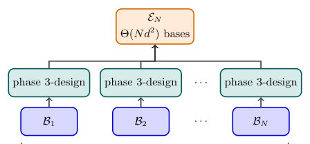
<figcaption class="paper-figure-caption"><b>Fig 1.</b> FIG. 1. Construction of the optimal measurement ensemble EN for worst-case shadow estimation from mutually unbiased bases (MUBs) and phase 3-designs. Each phase 3-design is constructed from Θ(d2) bases. The ensemble EN is composed of Θ(d2) bases whenever N = O(1) but can achieve optimal scaling in the worst-case shadow norm as long as N ≥2.</figcaption>
</figure>
<figure class="paper-figure-card">
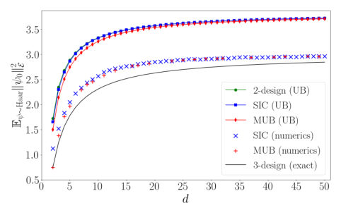
<figcaption class="paper-figure-caption"><b>Fig 2.</b> FIG. 2. Mean squared shadow norm for fidelity estimation of Haar-random pure states versus dimension d. SIC and MUB results are compared with upper bounds from Eq. (11), the exact 3-design result, and the worst-case 2-design bound [based on Proposition 1 and Eq. (11)]. Notably, the average performance across all 2-designs, including SICs and MUBs, nearly matches the 3-design benchmark.</figcaption>
</figure>
<figure class="paper-figure-card">
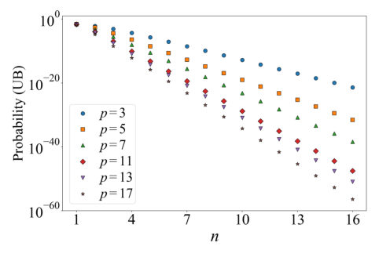
<figcaption class="paper-figure-caption"><b>Fig 3.</b> FIG. 3. Probability that ∥ψ0∥2 E ≥9 for a Haar-random pure state ψ in fidelity estimation based on n-qudit stabilizer mea- surements with local dimension p. The rapid decay confirms constant sample complexity for generic target states, in agree- ment with Theorem 3 and Proposition 3.</figcaption>
</figure>
</div>

<p><strong>Summary.</strong> This work rigorously analyzes the measurement resources needed to estimate unknown quantum properties via shadow estimation. It proves a fundamental complexity gap: achieving optimal performance in the worst case requires $\Theta(d^2)$ measurements, while average-case optimality is achieved with only $\Theta(d)$ measurements using state 2-designs.</p>
<p><strong>Why it may be interesting.</strong> The clear separation between worst-case and average-case resource requirements is crucial for designing practical quantum protocols, suggesting that simple, structured measurements are sufficient for most real-world applications.</p>
<details>
<summary>Detailed structure</summary>
<p><strong>Main problem.</strong> The core problem is determining the minimal measurement complexity required for achieving optimal shadow estimation of quantum properties from randomized measurements.</p>
<p><strong>Main result.</strong> A fundamental separation is established: worst-case optimality requires $\Theta(d^2)$ measurement bases, whereas average-case performance only needs $\Theta(d)$ bases.</p>
<p><strong>Method.</strong> The authors use the framework of $t$-designs (state and unitary) to analyze the shadow norm variance ($\lVert O 
Vert^2_E$) under different averaging procedures (worst-case vs. Haar random).</p>
<p><strong>Model / system.</strong> The system involves estimating properties of an unknown quantum state $
ho$ in a $d$-dimensional Hilbert space using measurement ensembles $\{|\phi_i
angle, w_i\}$ forming a POVM.</p>
<p><strong>Key observables.</strong> Shadow norm ($\lVert O 
Vert^2_E$), mean squared shadow norm, and the required number of measurement bases ($N$).</p>
<p><strong>Important parameters / regimes.</strong> $d$ (system dimension), $t$-design order ($t=2$ or $t=3$), and the complexity gap between worst-case ($\Theta(d^2)$) and average-case ($\Theta(d)$).</p>
<p><strong>Assumptions / limitations.</strong> The analysis often assumes that the measurement ensemble forms a state 2-design to simplify expectation value calculations.</p>
<p><strong>Figures summary.</strong> Figures compare mean squared shadow norms for fidelity estimation using different measurements (SIC-POVMs vs. MUBs) and show convergence towards theoretical bounds, illustrating the performance gap.</p>
<p><strong>Paper structure.</strong> The paper progresses by defining the shadow norm variance, establishing necessary conditions via $t$-designs, proving the $\Theta(d^2)$ lower bound for worst-case scenarios using explicit constructions (MUBs), and then demonstrating the $\Theta(d)$ sufficiency for average-case performance.</p>
</details>
<details>
<summary>Abstract</summary>
<p>Shadow estimation is a powerful framework for predicting quantum properties from randomized measurements. While $3$-design protocols achieve optimal worst-case performance, the minimal number of measurement bases required for such optimality has remained open. Here we prove that $Θ(d^2)$ measurement bases are both necessary and sufficient for worst-case optimal shadow estimation and construct an explicit basis family. In stark contrast, any state $2$-design already suffices for average-case optimality: the mean squared shadow norm of normalized observables is bounded by a universal constant, and we prove strong concentration for Haar-random states, yielding constant sample complexity for generic pure-state fidelity estimation. Easily implementable $2$-designs -- from mutually unbiased bases, cyclic measurements, or shallow $\mathcal{O}(\log n)$-depth circuits -- enable optimal average-case protocols with remarkably simple measurement strategies. Our results establish a fundamental complexity separation: worst-case estimation requires $Θ(d^2)$ bases, whereas average-case performance requires only $Θ(d)$ bases, with broad implications for quantum information theory and near-term experiments.</p>
</details>
<p><sub><a href="#top">↑ back to top</a></sub></p>

<p><a id="paper-2606.19502"></a></p>
<h3 id="entanglement-scaling-and-problem-structure-in-quantum-approximate-and-adiabatic-optimization-algorithms"><a href="http://arxiv.org/abs/2606.19502v1">Entanglement Scaling and Problem Structure in Quantum Approximate and Adiabatic Optimization Algorithms</a></h3>
<p><strong>Authors:</strong> Georgios Arapantonis, Paraj Titum, Gregory Quiroz<br>
<strong>Type:</strong> theory · <strong>Category:</strong> quantum information and computing · <strong>PDF:</strong> <a href="https://arxiv.org/pdf/2606.19502v1">https://arxiv.org/pdf/2606.19502v1</a><br>
<strong>Analysis basis:</strong> full PDF text, analyzed in chunks
<strong>Topic relevance:</strong> 🔥 <code>entanglement &amp; information structure</code> <strong>4/5</strong> · <code>non-equilibrium dynamics</code> <strong>1/5</strong></p>
<div class="figure-strip-hint">↔ Scroll figures horizontally</div>
<div class="paper-figures-scroll">
<figure class="paper-figure-card">
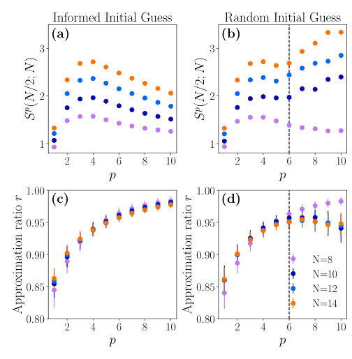
<figcaption class="paper-figure-caption"><b>Fig 1.</b> FIG. 1. Comparison of random and informed initialization strategies. Panels (a) and (b) present the average Sp(N/2; N) as a function of QAOA depth p for informed and random initialization, respectively. Panels (c) and (d) show the corresponding approximation ratios. Re- sults are averaged over 50 random instances of weighted complete graphs. Error bars indicate the standard error of the mean and are too small to be visible in panels (a) and (b). The performance of the classical optimizer can affect the entanglement profile of complete graphs.</figcaption>
</figure>
<figure class="paper-figure-card">
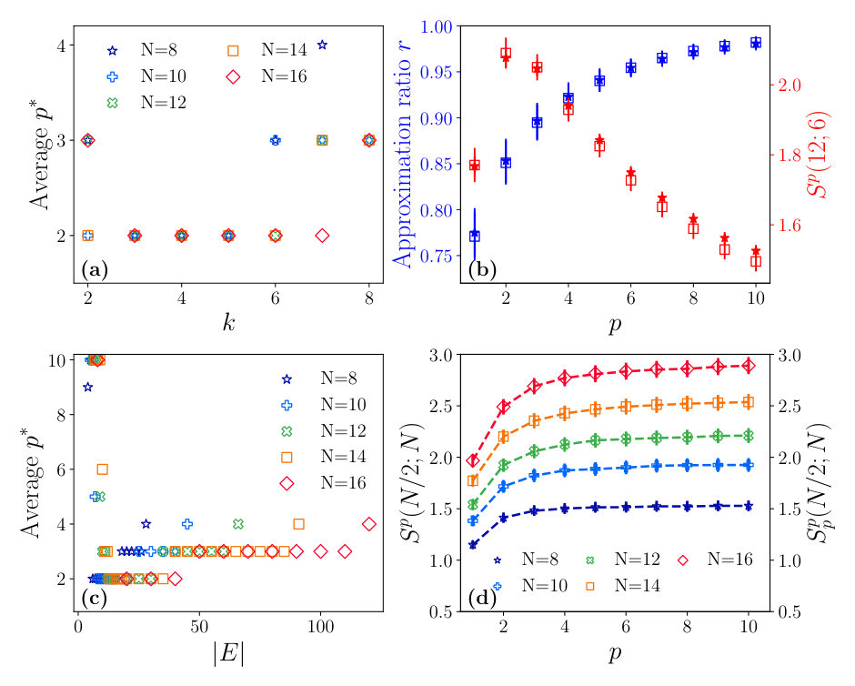
<figcaption class="paper-figure-caption"><b>Fig 2.</b> FIG. 2. Numerical simulations of Sp(N/2; N) and Sp p(N/2; N) as a function of QAOA depth p for Dataset KR and Dataset ED. The average number of QAOA layers p∗required to reach Sp∗(N/2; N) = Sreq(N/2; N), for Dataset KR and Dataset ED are shown in panels (a) and (c), respectively, for different system sizes N. In addition, panel (b) shows simulations for weighted 3-regular graphs with N = 12 using informed (stars) and random initial guesses (squares) for optimization. The entanglement entropy Sp p(N/2; N) at the final layer of the QAOA circuit (dashed line), and the maximum entanglement entropy Sp(N/2; N) (data points with different markers) as a function of QAOA depth p are shown for sparse...</figcaption>
</figure>
<figure class="paper-figure-card">
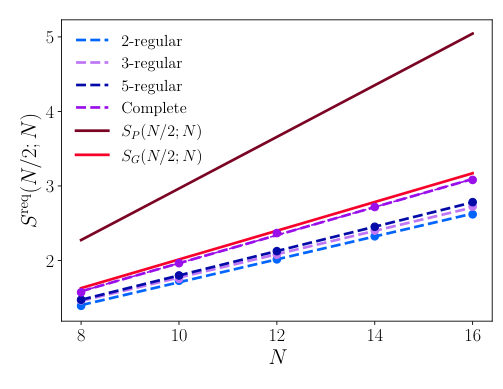
<figcaption class="paper-figure-caption"><b>Fig 3.</b> FIG. 3. Scaling of Sreq(N/2; N) in QAOA for Datasets KR and CW. SP (N/2; N) and SG(N/2; N) denote analytical predictions for Haar random states (i.e. Page Value) and fermionic Gaussian states, respectively; see Sec. V C for further details. Error bars denote the standard error of the mean and are smaller than the marker size. The required entanglement is upper-bounded by that of fermionic Gaussian states and scales linearly with system size for both training schemes implemented in this work.</figcaption>
</figure>
<figure class="paper-figure-card">
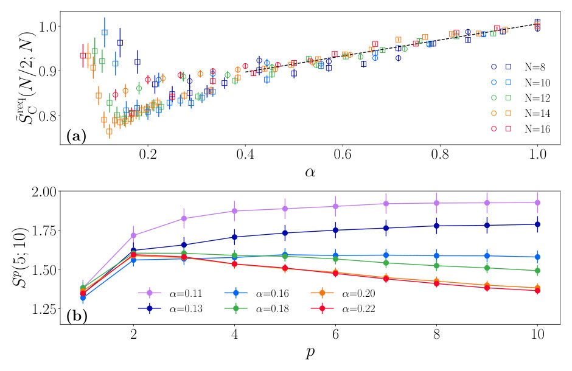
<figcaption class="paper-figure-caption"><b>Fig 4.</b> FIG. 4. Numerical simulations for entanglement requirement of QAOA for arbitrary graphs. Results from Dataset KR (circles) and Datasets CW and ED (squares) are shown. Panel (a) shows results, normalized by complete graphs, as a function of edge density. Dashed lines indicate the linear fit described in the text. Panel (b) shows Sp(N/2; N) versus QAOA depth for N = 10 qubits with different edge counts. Error bars denote the standard error of the mean. The fit accurately captures the entanglement in the high edge-density regime.</figcaption>
</figure>
<figure class="paper-figure-card">
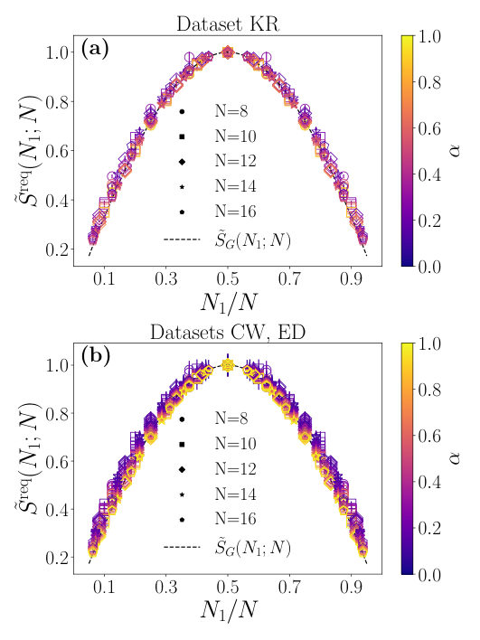
<figcaption class="paper-figure-caption"><b>Fig 5.</b> FIG. 5. Numerical simulations for the entanglement requirement in QAOA, across all bipartitions and different graph families. Data for (a) k-regular graphs from Dataset KR and (b) complete graphs and graphs with varying edges from Datasets CW, ED are shown. Differ- ent colors reflect the edge density, while different markers indicate the system size. Error bars denote the standard error of the mean. For graphs with large edge density, the numerical data collapse onto a single curve, which is well described by Eq. (19).</figcaption>
</figure>
</div>

<p><strong>Summary.</strong> This paper rigorously compares the entanglement scaling between QAOA and AQC when solving MaxCut on various graphs. It demonstrates that while both methods show volume-law scaling, their specific entanglement profiles differ based on the algorithm's structure and the annealing schedule chosen. The findings establish a strong link between quantum resource theory (entanglement) and the fundamental performance characteristics of near-term quantum algorithms.</p>
<p><strong>Why it may be interesting.</strong> This work provides deep insights into the resource theory aspect of quantum computation by quantifying exactly <em>how</em> much entanglement is required and generated by different algorithmic approaches for optimization problems.</p>
<details>
<summary>Detailed structure</summary>
<p><strong>Main problem.</strong> The paper investigates how entanglement scaling relates to problem structure when comparing two major quantum optimization paradigms: QAOA and AQC, applied to the MaxCut problem.</p>
<p><strong>Main result.</strong> QAOA exhibits entanglement scaling consistent with fermionic Gaussian states under optimal parameter training, while AQC shows distinct, schedule-dependent entanglement profiles. The study highlights that classical optimization protocols significantly impact the observed entanglement profile in variational algorithms.</p>
<p><strong>Method.</strong> The authors use numerical simulations to calculate and compare entanglement entropy across various bipartitions for QAOA and AQC applied to MaxCut on different graph structures (k-regular, complete).</p>
<p><strong>Model / system.</strong> The system is modeled using qubits encoding the MaxCut problem Hamiltonian ($H_C$). The algorithms analyzed are the Quantum Approximate Optimization Algorithm (QAOA) and Adiabatic Quantum Computation (AQC), which operate in a Hilbert space of dimension $2^N$.</p>
<p><strong>Key observables.</strong> Entanglement entropy ($S$), approximation ratio ($r$), required entanglement ($    ext{S}_{    ext{req}}$), and the peak depth ($p^*$) at which maximum entanglement is reached.</p>
<p><strong>Important parameters / regimes.</strong> QAOA depth ($p$), graph edge density ($\alpha$), system size ($N$), and the specific annealing schedule function $f(s)$ for AQC.</p>
<p><strong>Assumptions / limitations.</strong> The analysis often relies on sampling an ensemble of bipartitions to estimate average entanglement entropy, which is assumed accurate enough for scaling studies. It also compares results against analytical bounds like the Page Value and FGS estimates.</p>
<p><strong>Figures summary.</strong> Figures compare required entanglement ($   ext{S}_{    ext{req}}$) vs. depth ($p$) or edge density ($\alpha$) across different graph types (k-regular, complete), contrasting QAOA/AQC behavior with theoretical benchmarks like fermionic Gaussian states.</p>
<p><strong>Paper structure.</strong> The paper systematically compares the entanglement scaling of QAOA and AQC for MaxCut on various graphs, detailing how initialization strategies affect results, establishing connections to FGS bounds, and analyzing the dependence of AQC entanglement on the annealing schedule path.</p>
</details>
<details>
<summary>Abstract</summary>
<p>Entanglement is widely regarded as a key resource underlying the power of quantum algorithms and their potential to achieve quantum advantage. With the emergence of variational quantum algorithms, however, questions have arisen regarding how entanglement relates to problem structure and algorithmic performance in near-term quantum applications. Here, we examine this relationship through the Quantum Approximate Optimization Algorithm (QAOA), a specific class of variational algorithms, applied to the MaxCut problem. We show that suboptimal variational parameter training can significantly modify the observed entanglement profile, obscuring its scaling behavior. By employing a high-performance optimizer, we find empirical evidence that QAOA exhibits entanglement scaling consistent with that of fermionic Gaussian states (up to a scaling factor) across a broad range of MaxCut instances. We further compare these results with adiabatic quantum computation, observing annealing-schedule-dependent entanglement profiles whose scaling behavior differs markedly from that of QAOA. Together, these findings provide new insight into how entanglement manifests in and distinguishes these two algorithmic paradigms, highlighting its connection to both computational performance and application structure.</p>
</details>
<p><sub><a href="#top">↑ back to top</a></sub></p>

<p><a id="paper-2606.19963"></a></p>
<h3 id="majorana-bound-states-in-a-hybrid-kitaev-ladder-with-long-range-pairing"><a href="http://arxiv.org/abs/2606.19963v1">Majorana bound states in a hybrid Kitaev ladder with long-range pairing</a></h3>
<p><strong>Authors:</strong> Rajiv Kumar, Tapan Mishra, Levan Chotorlishvili, Sunil Kumar Mishra<br>
<strong>Type:</strong> theory · <strong>Category:</strong> other · <strong>PDF:</strong> <a href="https://arxiv.org/pdf/2606.19963v1">https://arxiv.org/pdf/2606.19963v1</a><br>
<strong>Analysis basis:</strong> full PDF text, analyzed in chunks
<strong>Topic relevance:</strong> 🔥 <code>analog quantum simulation</code> <strong>4/5</strong> · <code>Keldysh / 2PI / non-Gaussian methods</code> <strong>1/5</strong></p>
<div class="figure-strip-hint">↔ Scroll figures horizontally</div>
<div class="paper-figures-scroll">
<figure class="paper-figure-card">
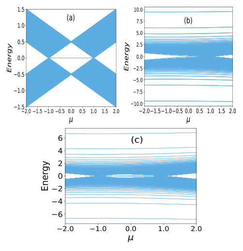
<figcaption class="paper-figure-caption"><b>Fig 1.</b> Figure 2. Energy spectrum for the (a) conventional Kitaev chain and (b) LR Kitaev chain (c) Hybrid Kitaev ladder with tν = 0.0 under OBC. The parameters used are t = ∆= 1.0 and L = 1000, with α = 0.5 for the LR pairing shown in panel (b).</figcaption>
</figure>
<figure class="paper-figure-card">
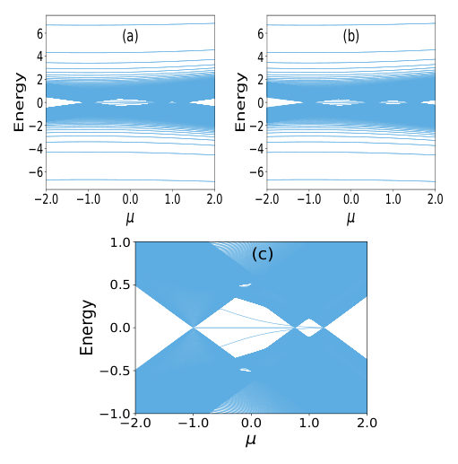
<figcaption class="paper-figure-caption"><b>Fig 2.</b> Figure 3. Energy spectrum for the hybrid Kitaev ladder under OBC with t = ∆= 1.0, α = 0.5, and chain lengths N = 2L = 1000. The spectra are shown for different inter-leg coupling strengths: (a) tν = 0.5 and (b) tν = 1.0 (c) Zoomed-in view of the region of interest of energy spectrum shown in (a).</figcaption>
</figure>
<figure class="paper-figure-card">
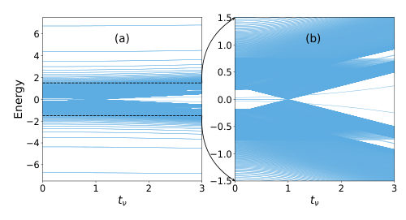
<figcaption class="paper-figure-caption"><b>Fig 3.</b> Figure 4. (a) Energy spectrum as a function of the inter-leg coupling strength tν for the hybrid Kitaev ladder under OBC with fixed µ = 0.5, t = ∆= 1.0, and LR pairing exponent α = 0.5. (b) Zoomed in portion of (a) is shown for clarity.</figcaption>
</figure>
<figure class="paper-figure-card">
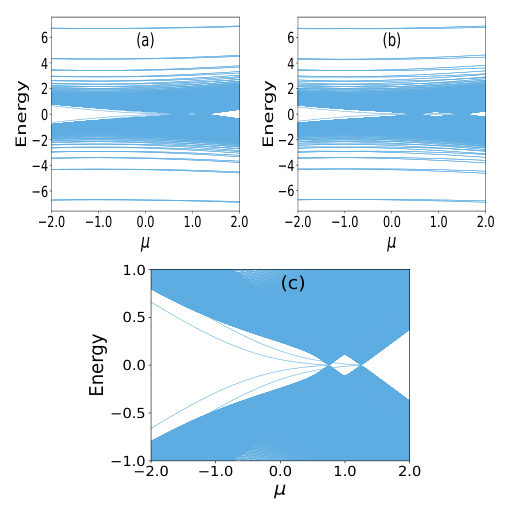
<figcaption class="paper-figure-caption"><b>Fig 4.</b> Figure 5. Energy spectrum for the LR–LR Kitaev ladder under OBC with t = ∆= 0.5, α = 0.5, and chain lengths N = 2L = 1000. The spectra are shown for different inter-leg coupling strengths: (a) tν = 0.5 and (b) tν = 1.0 (c) Zoomed- in view of the region of interest of energy spectrum shown in (a).</figcaption>
</figure>
<figure class="paper-figure-card">
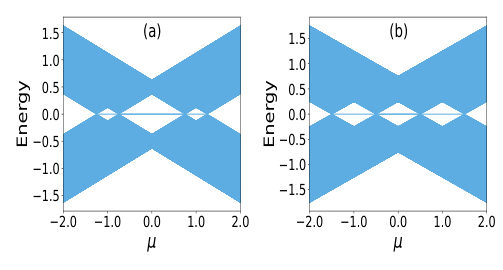
<figcaption class="paper-figure-caption"><b>Fig 5.</b> Figure 6. Energy spectrum for the NN - NN Kitaev ladder under OBC with t = ∆= 1.0 and chain lengths N = 2L = 1000. The spectra are shown for different inter-leg coupling strengths: (a) tν = 0.5 and (b) tν = 1.0.</figcaption>
</figure>
</div>

<p><strong>Summary.</strong> The paper theoretically investigates a hybrid superconducting ladder featuring both nearest-neighbor and long-range pairing interactions. By analyzing the system's energy spectrum using the BdG Hamiltonian, the authors map out a complex topological phase diagram controlled by three parameters: chemical potential ($\mu$), inter-leg coupling ($t_
u$), and the LR exponent ($\alpha$). The key finding is that these parameters allow for precise engineering of Majorana zero modes, enabling transitions between different numbers of localized edge states.</p>
<p><strong>Why it may be interesting.</strong> This work is highly relevant as it provides a concrete theoretical framework for realizing tunable topological superconductivity by incorporating non-local (long-range) pairing effects into established models like the Kitaev chain. The ability to control mode numbers via $\alpha$ is key for designing robust quantum hardware.</p>
<details>
<summary>Detailed structure</summary>
<p><strong>Main problem.</strong> The study investigates how incorporating long-range (LR) pairing interactions modifies the topological phase diagram of superconducting systems, specifically focusing on Majorana bound states (MBSs). The goal is to demonstrate controlled tuning of these exotic quantum states.</p>
<p><strong>Main result.</strong> The system exhibits a rich topological phase diagram where varying the LR pairing exponent ($\alpha$) and inter-leg coupling ($t_
u$) allows for transitions between phases hosting two or four Majorana zero modes. This confirms that long-range interactions provide an additional, tunable mechanism to engineer topological superconductivity.</p>
<p><strong>Method.</strong> The analysis relies on constructing and solving the Bogoliubov-de Gennes (BdG) Hamiltonian in momentum space to determine the energy spectra and identify gap closings corresponding to topological phase transitions.</p>
<p><strong>Model / system.</strong> The model is an inter-leg coupled hybrid Kitaev ladder, consisting of two parallel superconducting chains. One chain has conventional nearest-neighbor ($p$-wave) pairing, while the other incorporates algebraically decaying long-range (LR) pairing interactions.</p>
<p><strong>Key observables.</strong> Majorana zero modes (MZMs), Massive Dirac modes (MDMs), topological phase boundaries, and the number of localized edge states.</p>
<p><strong>Important parameters / regimes.</strong> Long-range pairing exponent ($\alpha$), inter-leg coupling strength ($t_
u$), chemical potential ($\mu$), and superconducting pairing strengths ($\Delta$).</p>
<p><strong>Assumptions / limitations.</strong> The system is modeled using spinless fermions obeying standard fermionic anti-commutation relations, and the analysis maps topological transitions to bulk gap closing points.</p>
<p><strong>Figures summary.</strong> Figures illustrate energy spectra showing how changing $t_
u$ or $\alpha$ shifts transition points and controls the coexistence of MZMs and MDMs. Phase diagrams map out the regions in $(\mu, t_
u)$ and $(\alpha, \mu)$ space corresponding to different topological states.</p>
<p><strong>Paper structure.</strong> The paper systematically analyzes the Hamiltonian by first establishing the model (hybrid Kitaev ladder), then using BdG theory to calculate spectra across varying parameters ($\mu, t_
u, \alpha$), leading to detailed phase diagram construction and concluding with implications for quantum engineering.</p>
</details>
<details>
<summary>Abstract</summary>
<p>We investigate an inter-leg coupled hybrid Kitaev ladder composed of two parallel superconducting chains with distinct pairing interactions. The upper chain of the ladder hosts conventional $p$-wave pairing, while the lower chain exhibits long-range pairing that decays algebraically with distance. We demonstrate that the mutual influence of long-range pairing exponent, chemical potential, and inter-leg coupling strength gives rise to a rich topological phase diagram characterized by multiple Majorana zero modes and massive Dirac modes. In particular, we show that the inter-leg coupling renormalizes the effective energy scales, leading to a systematic shift of the topological phase boundaries and enabling controlled tuning of the Majorana modes. Furthermore, we identify a transition from a two Majorana zero mode phase to a phase encapsulating four Majorana zero modes, as the long-range pairing exponent is varied. This transition is accompanied by a crossover regime in which Majorana zero modes coexist with massive Dirac modes, reflecting hybridization between edge and bulk excitations. This ladder thus provides a minimal and attractive platform for realizing the impact of a long-range pairing on topological phases. Our results highlight the potential of long-range hybrid systems for engineering tunable topological states relevant for quantum information applications.</p>
</details>
<p><sub><a href="#top">↑ back to top</a></sub></p>

<p><a id="paper-2606.20503"></a></p>
<h3 id="general-circuit-mapping-algorithm-for-neutral-atom-quantum-computers"><a href="http://arxiv.org/abs/2606.20503v1">General circuit mapping algorithm for neutral atom quantum computers</a></h3>
<p><strong>Authors:</strong> Neven Gentil, Lous S. Rianne, Aida Todri-Sanial<br>
<strong>Type:</strong> theory · <strong>Category:</strong> other · <strong>PDF:</strong> <a href="https://arxiv.org/pdf/2606.20503v1">https://arxiv.org/pdf/2606.20503v1</a><br>
<strong>Analysis basis:</strong> full PDF text, analyzed in chunks
<strong>Topic relevance:</strong> 🔥 <code>QC/QI experiment</code> <strong>4/5</strong></p>
<div class="figure-strip-hint">↔ Scroll figures horizontally</div>
<div class="paper-figures-scroll">
<figure class="paper-figure-card">
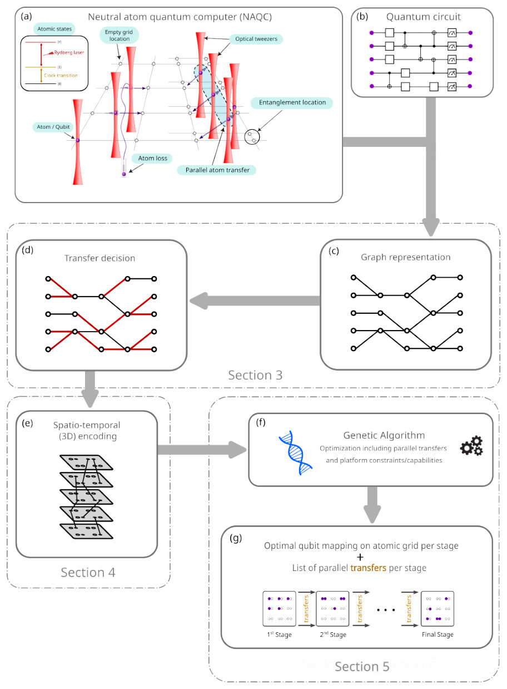
<figcaption class="paper-figure-caption"><b>Fig 1.</b> Figure 1: Schematic overview of the proposed mapper algorithm. Given a specific neutral atom platform (a) and a quantum circuit (b), the quantum digraph represents the decomposition of gate operations into different stages and atom transfers between the stages (c). This graph encompasses the specific platform constraints and capabilities. The graph representation allows to decouple qubit placement at each stage from the transfer scheme used between stages. An optimal transfer scheme is deduced (d) and used to build an efficient encoding of the mapping problem (e). Then, a genetic algorithm (f) converges to a global optimum with respect to the distance traveled by the atoms and the parallel...</figcaption>
</figure>
<figure class="paper-figure-card">
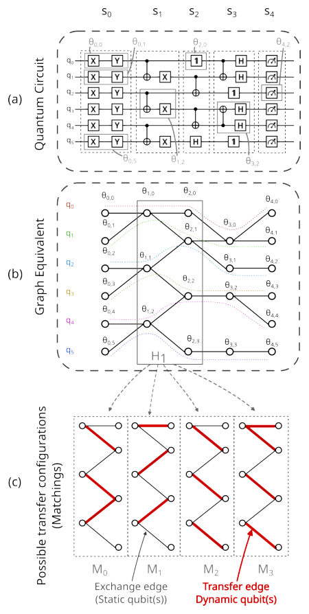
<figcaption class="paper-figure-caption"><b>Fig 2.</b> Figure 2: Example of quantum circuit transformed into a quantum circuit digraph with extraction of possible matchings between consecutive stages. (a) is an exam- ple of scheduled quantum circuit. The stages are labeled si. Inside the stages, the series of gates affecting com- mon qubits are grouped into instructions θi,j. Transfers of the qubits, or remapping, are executed between each stage exclusively. (b) is the associated general quantum digraph G from (a). The edges are directed from θi,j to θi+1,j′. The instructions applied on the qubits along the stages are represented by colored dotted lines: q0 un- dergoes θ0,0, θ1,0, θ2,0, θ3,0 and θ4,0 for example. The subgraph H1 is extracted...</figcaption>
</figure>
<figure class="paper-figure-card">
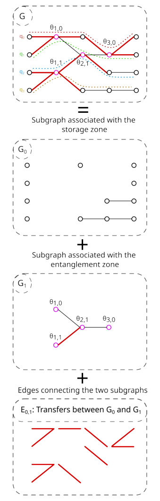
<figcaption class="paper-figure-caption"><b>Fig 3.</b> Figure 3: Decomposition of part of the quantum cir- cuit from Figure 2 for a zoned architecture with two zones. The edges marked as transfers are in red. The edges marked as static are in black. The instructions containing two qubits are pink circles. In this example, ˆθZ1 = {θ1,0, θ1,1, θ2,1, θ3,0}. G is therefore the union of the subgraph G0 containing single-qubit gates only, G1 containing two-qubit gates/single qubit gates, and the edges E0,1 connecting G0 and G1. Since the physical zones associated with G0 and G1 are spatially separated, the edges connecting G0 and G1 are necessarily trans- fers.</figcaption>
</figure>
<figure class="paper-figure-card">
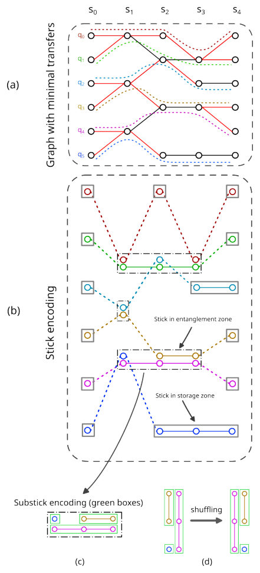
<figcaption class="paper-figure-caption"><b>Fig 4.</b> Figure 4: Transforming the graph representation into stick encoding. Sub-figure (a) is the digraph G of the quantum circuit in Figure 2 where the matchings (black edges) fit the minimum number of transfers for a Z-arch. The red edges are transfers: 16 transfers are required to run the circuit on a two-zoned architecture. Sub-figure (b) is the efficient stick encoding of G. The black boxes are sticks associated with G0 while dashed black boxes are sticks associated with G1 (see Figure 3). The dot- ted lines are transfers. The colors correspond to the qubit colors in (a). Sub-figure (c) is an example of sub- sticks encapsulation (green boxes). Sub-figure (d) is an example of shuffling of the...</figcaption>
</figure>
<figure class="paper-figure-card">
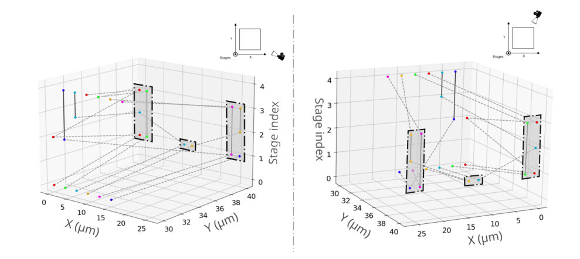
<figcaption class="paper-figure-caption"><b>Fig 5.</b> Figure 5: A 3D view of the stick encoding described in Figure 4 for a 2Z-arch. The atomic grid is the XY plane. The Z axis is time / stages. The atoms are colored according to Figure 2. The transfers are dotted grey lines connecting the atoms. The black lines represent the substicks. We clearly see the atoms in the storage zone at Y=30, Stage index=0 and Y=30, Stage index=4. The entanglement zone is located along the Y=40 vertical plane. Dashed black boxes encompass sticks/substicks involved in the entanglement zone.</figcaption>
</figure>
</div>

<p><strong>Summary.</strong> This paper introduces a general graph-theoretic framework to optimize the compilation of quantum circuits for Neutral Atom Quantum Computers (NAQC). By modeling physical qubit transfers as a combinatorial optimization problem solved with a genetic algorithm, it minimizes required atom movements and maximizes parallel operations. This results in hardware-aware mappings that promise higher fidelity and better efficiency on NAQC devices.</p>
<p><strong>Why it may be interesting.</strong> This work directly addresses hardware limitations—specifically qubit mobility and associated error rates—in emerging quantum computing platforms based on neutral atoms, providing crucial algorithmic tools for realizing scalable quantum computation.</p>
<details>
<summary>Detailed structure</summary>
<p><strong>Main problem.</strong> The core challenge is developing an efficient, architecture-aware algorithm to compile quantum circuits for Neutral Atom Quantum Computers (NAQC) by minimizing the physical movement and required transfers of qubits.</p>
<p><strong>Main result.</strong> The proposed graph-theoretic framework consistently finds fewer qubit transfers compared to state-of-the-art compilers, providing a practical tool that reduces movement-induced errors on NAQC devices.</p>
<p><strong>Method.</strong> The authors model the circuit as a sequence of stages and use graph-theoretic combinatorial optimization (encoding it as a nonlinear integer program) solved via a genetic algorithm to optimize qubit mapping.</p>
<p><strong>Model / system.</strong> The system is an NAQC platform using ultracold atoms trapped by optical tweezers. The compilation process involves decomposing the circuit into stages, modeling transfers between these stages using graphs, and optimizing for minimal physical movement.</p>
<p><strong>Key observables.</strong> Total number of qubit transfers ($\lambda_q$), total traveled distance ($\mu$m), and the count of Parallel Transfer Operations (PTOs).</p>
<p><strong>Important parameters / regimes.</strong> Qubit coherence time, Rydberg blockade interaction range ($\sim 2-4 \mu	ext{m}$), and physical zone constraints.</p>
<p><strong>Assumptions / limitations.</strong> The optimization relies on decomposing the problem into local maximum weighted matchings at each stage transition, assuming independence between these stages for the global optimum calculation.</p>
<p><strong>Figures summary.</strong> Figures illustrate the decomposition of a quantum circuit into stages and transfer decision graphs; they also show the stick encoding, the process of breaking cycles in transfer digraphs, and benchmark comparisons against existing mappers.</p>
<p><strong>Paper structure.</strong> The paper builds from identifying the physical constraints (qubit movement) to proposing a graph-theoretic framework. It details how the problem is formulated as an integer program solved by a genetic algorithm, culminating in comparative results showing performance improvements over existing compilers.</p>
</details>
<details>
<summary>Abstract</summary>
<p>Neutral atom quantum computers (NAQC) are emerging as a promising, scalable quantum computing platform because of their long qubit coherence, flexible qubit arrangement, and multiqubit gate capabilities. However, circuit execution often requires physically moving qubits, making compilation a critical optimization challenge. We propose a circuit independent mathematical framework built on graph-theoretic combinatorial optimization that determines the minimal number of required qubit transfers. This model captures spatial constraints specific to NAQC platforms with zone-limited gate operations and multi-qubit gates. From this framework, we encode the qubit mapping problem as a nonlinear integer program and solve it using a genetic algorithm, enabling trade-offs between minimizing the total traveled distance and the number of parallel transfer operations. Compared to the state-of-the-art scalable compiler for zoned architectures, our approach consistently finds fewer transfers. Depending on the optimization focus, our method produces shorter traveled distances or fewer parallel transfer operations. This work provides both theoretical guaranties and a practical tool for efficient, architecture-aware quantum circuit compilation. As a result, practitioners can generate hardware-aware mappings that reduce movement-induced errors and better exploit atom transfer parallelism, directly improving execution efficiency on NAQC devices.</p>
</details>
<p><sub><a href="#top">↑ back to top</a></sub></p>

<p><a id="paper-2606.20372"></a></p>
<h3 id="attosecond-path-qubits-in-high-harmonic-generation-classical-dephasing-and-trace-out-decoherence"><a href="http://arxiv.org/abs/2606.20372v1">Attosecond Path Qubits in High-Harmonic Generation: Classical Dephasing and Trace-Out Decoherence</a></h3>
<p><strong>Authors:</strong> A. Marchisio, C. Granados, M. F. Ciappina, O. Cohen<br>
<strong>Type:</strong> theory · <strong>Category:</strong> quantum information and computing · <strong>PDF:</strong> <a href="https://arxiv.org/pdf/2606.20372v1">https://arxiv.org/pdf/2606.20372v1</a><br>
<strong>Analysis basis:</strong> full PDF text, analyzed in chunks
<strong>Topic relevance:</strong> <code>correlated / nonlocal dissipation</code> <strong>3/5</strong> · <code>driven-dissipative phase transition</code> <strong>3/5</strong> · <code>methods for driven-dissipative</code> <strong>3/5</strong> · <code>quantum measurements</code> <strong>3/5</strong> · <code>Keldysh / 2PI / non-Gaussian methods</code> <strong>2/5</strong> · <code>entanglement &amp; information structure</code> <strong>2/5</strong> · <code>interference shaping light</code> <strong>2/5</strong> · <code>non-equilibrium dynamics</code> <strong>2/5</strong> · <code>non-equilibrium universality</code> <strong>2/5</strong> · <code>measurement-induced transitions</code> <strong>1/5</strong></p>
<div class="figure-strip-hint">↔ Scroll figures horizontally</div>
<div class="paper-figures-scroll">
<figure class="paper-figure-card">
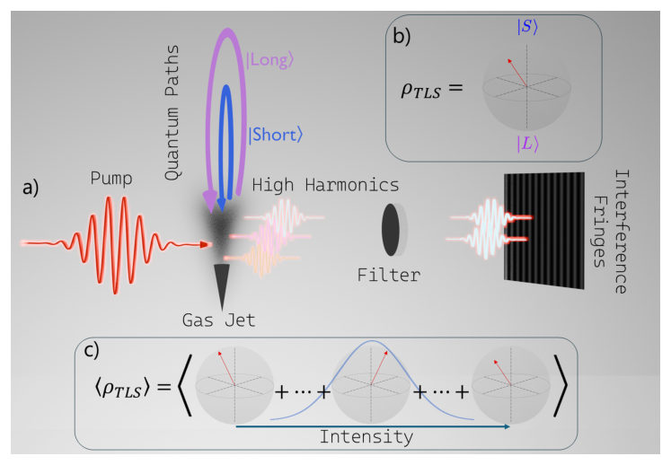
<figcaption class="paper-figure-caption"><b>Fig 1.</b> Figure 1: Attosecond-path qubits in HHG. (a) Schematic of a prototypical HHG experiment, together with the dominant quantum orbits that define the two-path states. (b) Bloch-sphere representation of the APQ density matrix (See Eq. (9)), and (c) of its ensemble average under shot-by-shot fluctuations. For each laser shot, a distinct effective two-level state is defined, and the ensemble average over these realizations yields the mixed state introduced in Eq. (26).</figcaption>
</figure>
<figure class="paper-figure-card">
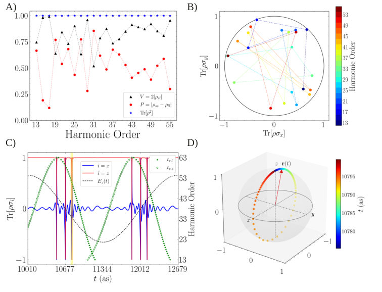
<figcaption class="paper-figure-caption"><b>Fig 2.</b> Figure 2: APQ and TLS Bloch vector dynamics for pure-state density matrices. (A) Interferometric visibility V (black triangles), predictability P (red circles), and state purity Tr[ρ2] (blue stars) as functions of harmonic order for the APQ. (B) Complex coherence map showing the x and y Bloch-vector components as a function of harmonic order; the dashed lines trace the spectral evolution within the unit disk. (C) Real-time evolution of the Bloch-vector components during one optical cycle for the time-domain TLS, together with the semiclassical ionization (ti) and recombination (tr) times derived from saddle-point solutions (see SM). (D) Three-dimensional Bloch-sphere trajectory of the TLS...</figcaption>
</figure>
<figure class="paper-figure-card">
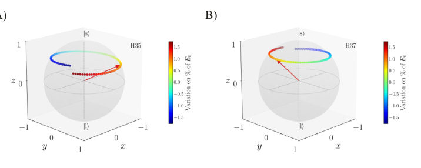
<figcaption class="paper-figure-caption"><b>Fig 3.</b> Figure 3: APQ Bloch vector for different laser intensities. (A) APQ Bloch vector for H35 and (B) H37, as a function of laser intensity. The scale is presented as a percentage of variation from the central value, E0 = 0.109 a.u.</figcaption>
</figure>
<figure class="paper-figure-card">
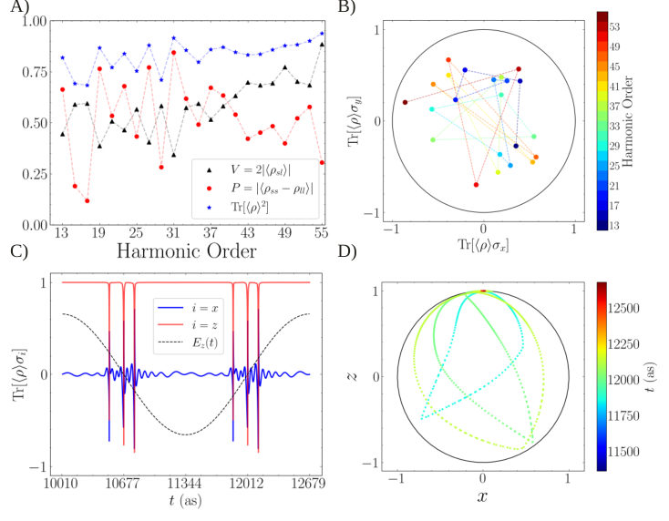
<figcaption class="paper-figure-caption"><b>Fig 4.</b> Figure 4: APQ and TLS Bloch vector dynamics for the ensemble-averaged density matrix. (A) Interferometric visibility V (black triangles), predictability P (red circles), and state purity Tr[ρ2] (blue stars) as functions of harmonic order. (B) Complex coherence map showing the x and y Bloch-vector components as a function of harmonic order; Comparing with Figure 2(b), the contraction toward the center of the disk illustrates the dephasing-induced decoherence. (C) Real-time evolution of the ensemble-averaged Bloch-vector components during one optical cycle for the time-domain TLS. (D) Three-dimensional Bloch-sphere trajectory of the ensemble-averaged TLS over half an optical cycle,...</figcaption>
</figure>
<figure class="paper-figure-card">
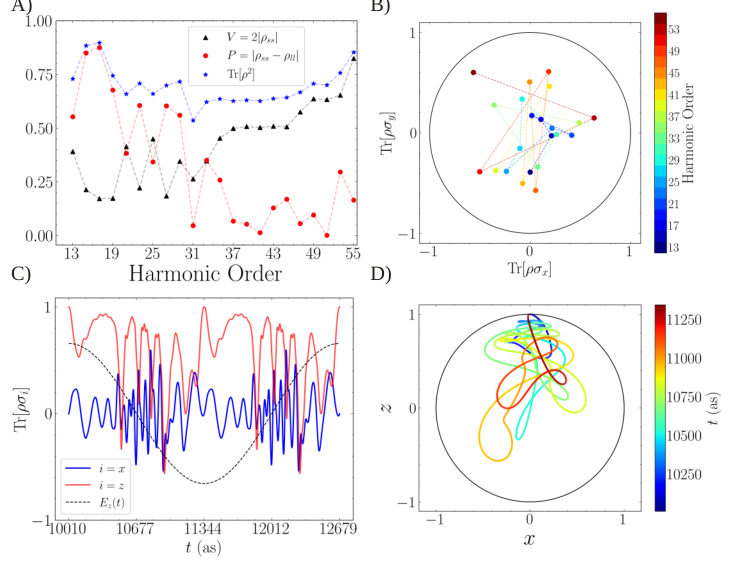
<figcaption class="paper-figure-caption"><b>Fig 5.</b> Figure 5: Bloch vector dynamics after tracing over transverse momentum. (A) Interferometric visibility V (black triangles), predictability P (red circles), and state purity Tr[ρ2] (blue stars) as functions of harmonic order for the integrated APQ. (B) Complex coherence map representing the x and y Bloch-vector components as a function of harmonic order; Comparing with Figs. 2(b) and 4(b), the reduction in oscillation amplitudes illustrates the intrinsic decoherence induced by the trace-out of transverse degrees of freedom. (C) Real-time evolution of the integrated Bloch-vector components over one optical cycle for the time-domain TLS. (D) Three- dimensional Bloch-sphere trajectory of the...</figcaption>
</figure>
</div>

<p><strong>Summary.</strong> The paper treats High-Harmonic Generation as a form of attosecond interferometry, defining the two dominant electron paths (short and long) as an Attosecond Path Qubit (APQ). It rigorously distinguishes between decoherence caused by classical laser intensity fluctuations (dephasing) and fundamental information loss due to unobserved transverse momentum (trace-out). This establishes HHG as a powerful tool for quantum state characterization in the attosecond regime.</p>
<p><strong>Why it may be interesting.</strong> This work directly bridges attosecond physics (HHG) with fundamental concepts of open quantum systems theory, providing measurable signatures ($V$ vs. $P$) to diagnose coherence loss in an extreme non-equilibrium quantum process.</p>
<details>
<summary>Detailed structure</summary>
<p><strong>Main problem.</strong> To develop a reduced-state framework for diagnosing coherence loss in High-Harmonic Generation (HHG) by treating the dominant short and long electron trajectories as an experimentally addressable two-level subsystem: an attosecond path qubit (APQ).</p>
<p><strong>Main result.</strong> The study successfully distinguishes between classical dephasing (ensemble averaging) and fundamental quantum decoherence (trace-out of unobserved transverse momentum), establishing HHG as a platform for engineering trajectory-based quantum states.</p>
<p><strong>Method.</strong> The authors formulate a trajectory-resolved density matrix for the APQ, analyzing its evolution under both environmental coupling models: classical noise and partial tracing over transverse degrees of freedom.</p>
<p><strong>Model / system.</strong> The physical system is High-Harmonic Generation (HHG), modeled using the Strong-Field Approximation (SFA). The core concept involves mapping the electron's continuum dynamics onto an effective two-level Hilbert space spanned by short and long quantum trajectories, forming the APQ.</p>
<p><strong>Key observables.</strong> APQ purity ($  ext{Tr}[
ho^2]$), Bloch vector components ($r_x, r_y, r_z$), Interferometric Visibility ($V$), and Predictability ($P$).</p>
<p><strong>Important parameters / regimes.</strong> Attosecond timescale dynamics, laser intensity fluctuations (Gaussian distribution), transverse momentum integration limits.</p>
<p><strong>Assumptions / limitations.</strong> The analysis relies on the Strong-Field Approximation (SFA) and assumes that short and long trajectories define an approximately orthogonal basis for the APQ.</p>
<p><strong>Figures summary.</strong> Figures illustrate Bloch vector dynamics for both pure states and mixed states under dephasing (intensity fluctuations) and decoherence (transverse momentum integration), showing the reduction of coherence magnitude in both cases.</p>
<p><strong>Paper structure.</strong> The paper progresses by first defining the APQ basis from HHG trajectories, then quantifying coherence loss via two distinct channels—classical dephasing and quantum trace-out decoherence—to establish a comprehensive diagnostic framework for attosecond interferometry.</p>
</details>
<details>
<summary>Abstract</summary>
<p>High-harmonic generation (HHG) is governed by interference between electron trajectories. We propose that the dominant short and long trajectories define an experimentally addressable two-level subsystem: an attosecond path qubit (APQ). We formulate a trajectory-resolved density matrix to identify two distinct coherence-loss mechanisms: classical dephasing from ensemble averaging and quantum decoherence arising from the trace-out of unobserved degrees of freedom. By investigating shot-to-shot fluctuations and unresolved transverse momentum, we demonstrate that while dephasing suppresses coherence through averaging, the ``trace-out'' channel produces mixed states even for fixed driving parameters. We explore how these mechanisms modify APQ purity and show that mode selection and conditioning provide operational routes to isolate them. These results establish a reduced-state framework for diagnosing coherence loss in HHG and for engineering trajectory-based quantum states in attosecond interferometry.</p>
</details>
<p><sub><a href="#top">↑ back to top</a></sub></p>

<p><a id="paper-2606.20024"></a></p>
<h3 id="simulation-of-non-markovian-quantum-accelerated-dynamics-via-time-fractional-schrodinger-equation"><a href="http://arxiv.org/abs/2606.20024v1">Simulation of Non-Markovian Quantum Accelerated Dynamics via Time-Fractional Schrödinger Equation</a></h3>
<p><strong>Authors:</strong> Dongmei Wei, Junxiang Wang, Hanxiu Xu, Cancan Chen, Jiaying Wu<br>
<strong>Type:</strong> theory · <strong>Category:</strong> other · <strong>PDF:</strong> <a href="https://arxiv.org/pdf/2606.20024v1">https://arxiv.org/pdf/2606.20024v1</a><br>
<strong>Analysis basis:</strong> full PDF text, analyzed in chunks
<strong>Topic relevance:</strong> <code>correlated / nonlocal dissipation</code> <strong>3/5</strong> · <code>methods for driven-dissipative</code> <strong>3/5</strong> · <code>non-equilibrium dynamics</code> <strong>3/5</strong> · <code>Tavis-Cummings &amp; cavity-many-emitter</code> <strong>2/5</strong> · <code>driven-dissipative phase transition</code> <strong>2/5</strong> · <code>non-equilibrium universality</code> <strong>2/5</strong> · <code>Keldysh / 2PI / non-Gaussian methods</code> <strong>1/5</strong> · <code>Kondo &amp; dissipative impurity</code> <strong>1/5</strong> · <code>analog quantum simulation</code> <strong>1/5</strong> · <code>correlated cavity matter</code> <strong>1/5</strong> · <code>entanglement &amp; information structure</code> <strong>1/5</strong> · <code>scars &amp; prethermalization</code> <strong>1/5</strong></p>
<div class="figure-strip-hint">↔ Scroll figures horizontally</div>
<div class="paper-figures-scroll">
<figure class="paper-figure-card">
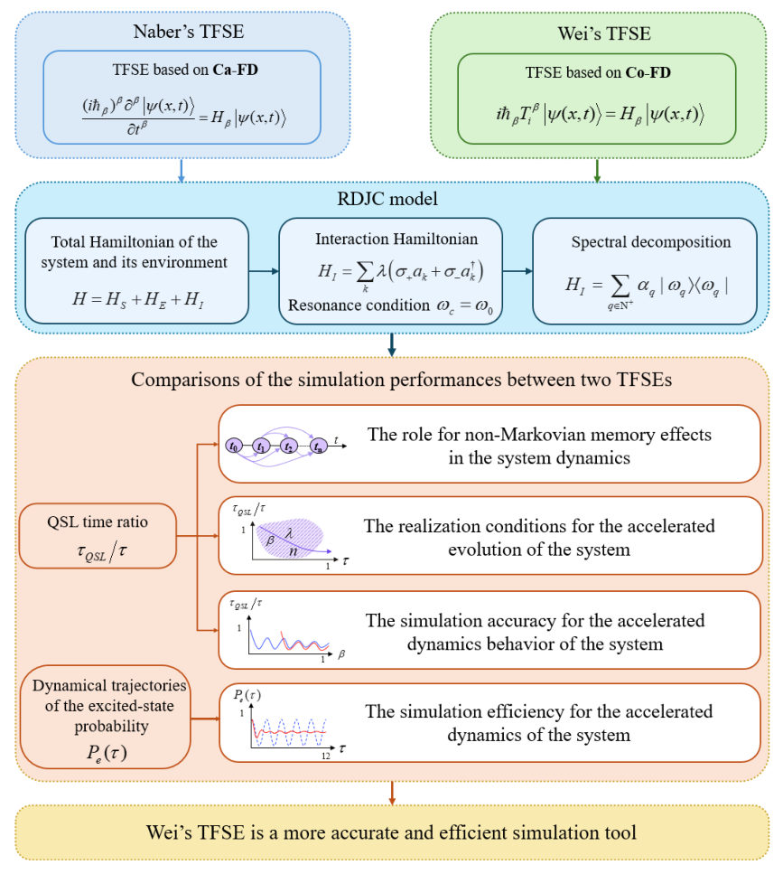
<figcaption class="paper-figure-caption"><b>Fig 1.</b> Figure 1: Schematic framework of this work. The simulation performances of Naber’s TFSE and Wei’s TFSE in the RDJC model are compared by calculating the QSL time ratio 𝜏𝑄𝑆𝐿∕𝜏and tracking the dynamical trajectory of the excited-state probability 𝑃𝑒(𝜏).</figcaption>
</figure>
<figure class="paper-figure-card">
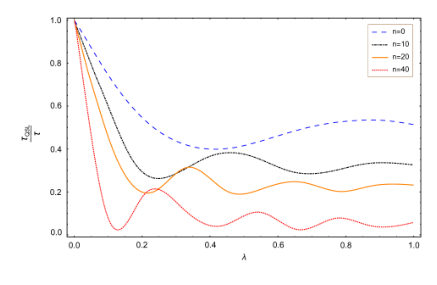
<figcaption class="paper-figure-caption"><b>Fig 2.</b> Figure 4: Under the framework of Wei’s TFSE, the QSL time ratio 𝜏𝑄𝑆𝐿∕𝜏of the single-qubit open system as a function of the coupling strength 𝜆for different photon numbers 𝑛= 0, 10, 20, 40, where the fractional order is set as 𝛽= 0.8 and the evolution time as 𝜏= 1.</figcaption>
</figure>
<figure class="paper-figure-card">
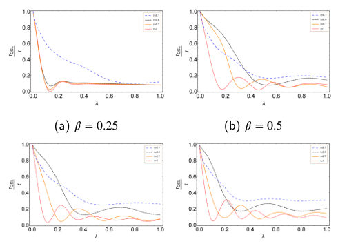
<figcaption class="paper-figure-caption"><b>Fig 3.</b> Figure 2: Under the framework of Wei’s TFSE, the QSL time ratio 𝜏𝑄𝑆𝐿∕𝜏of the single-qubit open system as a function of the coupling strength 𝜆for different fractional orders 𝛽and evolution times 𝜏, where (a) 𝛽= 0.25, (b) 𝛽= 0.5, (c) 𝛽= 0.75, and (d) 𝛽= 1. Other parameters are set as 𝜏= 0.1, 0.4, 0.7, 1 and 𝑛= 40.</figcaption>
</figure>
<figure class="paper-figure-card">
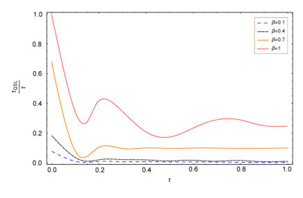
<figcaption class="paper-figure-caption"><b>Fig 4.</b> Figure 3: Under the framework of Wei’s TFSE, the QSL time ratio 𝜏𝑄𝑆𝐿∕𝜏of the single-qubit open system as a function of the evolution time 𝜏for different fractional orders 𝛽= 0.1, 0.4, 0.7, 1, where the coupling strength is set as 𝜆= 0.5 and the photon number as 𝑛= 40.</figcaption>
</figure>
<figure class="paper-figure-card">
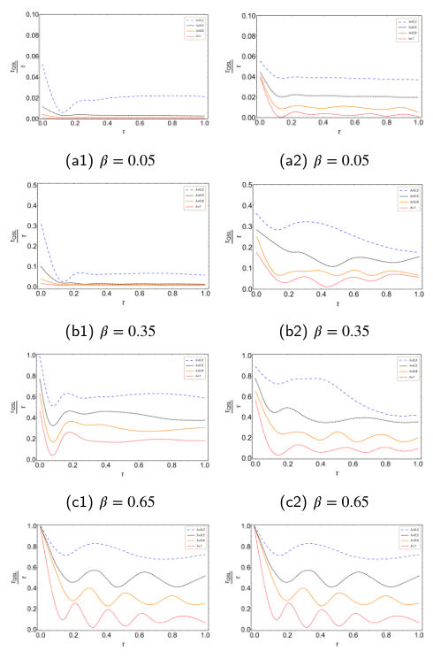
<figcaption class="paper-figure-caption"><b>Fig 5.</b> Figure 5: Under the frameworks of Naber’s TFSE and Wei’s TFSE, the QSL time ratio 𝜏𝑄𝑆𝐿∕𝜏of the single-qubit open system as a function of the evolution time 𝜏for different fractional orders 𝛽and coupling strengths 𝜆, where the parameters are set as (a1-a2) 𝛽= 0.05, (b1-b2) 𝛽= 0.35, (c1-c2) 𝛽= 0.65, and (d1-d2) 𝛽= 1. Other parameters are 𝜆= 0.2, 0.5, 0.8, 1 and 𝑛= 40.</figcaption>
</figure>
</div>

<p><strong>Summary.</strong> The paper investigates how fast an open quantum system can evolve under non-Markovian conditions by calculating the Quantum Speed Limit using time-fractional equations. It rigorously compares two theoretical frameworks, concluding that Wei's Time-Fractional Schrödinger Equation is both more accurate and significantly more computationally efficient than existing methods for modeling these complex dynamics.</p>
<p><strong>Why it may be interesting.</strong> This is highly relevant as it tackles open quantum dynamics, non-Markovian effects, and speed limits—all central themes in modern AMO physics and quantum optics. The comparison between different mathematical formalisms (TFSE) adds a layer of methodological rigor.</p>
<details>
<summary>Detailed structure</summary>
<p><strong>Main problem.</strong> The paper addresses the simulation of non-Markovian quantum accelerated dynamics and characterizing the Quantum Speed Limit (QSL) time for such open quantum systems.</p>
<p><strong>Main result.</strong> Wei's Time-Fractional Schrödinger Equation (TFSE) is shown to be superior to Naber's TFSE because it accurately captures non-Markovian acceleration over all fractional orders and offers significant computational efficiency.</p>
<p><strong>Method.</strong> The study employs the TFSE framework, comparing two formulations (Wei's Co-FD vs. Naber's Ca-FD) to simulate dynamics in an open quantum system.</p>
<p><strong>Model / system.</strong> The analysis is performed on a single-qubit open system modeled by the Resonant Dissipative Jaynes-Cummings (RDJC) model, incorporating non-Markovian memory effects from the environment.</p>
<p><strong>Key observables.</strong> Quantum Speed Limit time ($    au_{QSL}$), $   au_{QSL}/   au$ ratio, and the excited-state probability $P_e(	au)$.</p>
<p><strong>Important parameters / regimes.</strong> Fractional order ($eta$), coupling strength ($\lambda$), photon number ($n$), and evolution time ($ au$).</p>
<p><strong>Assumptions / limitations.</strong> The QSL calculation utilizes a Margolus-Levitin-type bound for a pure initial state.</p>
<p><strong>Figures summary.</strong> Figures compare $  au_{QSL}/   au$ vs. $\lambda$, $  au_{QSL}/   au$ vs. $   au$, and $P_e(	au)$ across different TFSE formulations, highlighting the superior performance of Wei's method.</p>
<p><strong>Paper structure.</strong> The paper first introduces the problem by defining QSL in non-Markovian systems. It then compares two TFSE approaches (Wei's vs. Naber's) using the RDJC model to calculate $  au_{QSL}$. The core of the work involves demonstrating Wei's method's superior accuracy across all fractional orders and its computational efficiency.</p>
</details>
<details>
<summary>Abstract</summary>
<p>The Time-Fractional Schrödinger Equation (TFSE) is an effective tool for simulating the dynamics of non-Markovian quantum systems. The Quantum Speed Limit (QSL) time characterizes the minimum time required for the evolution of a non-Markovian quantum system. In this paper, Wei's TFSE is employed to simulate the non-Markovian quantum accelerated evolution process in the Resonant Dissipative Jaynes-Cummings (RDJC) model. By solving the QSL time of a time-fractional single-qubit open system, the enhancement mechanism of the system evolution speed induced by the non-Markovian memory effects of the environment is revealed. Further studies show that the optimized acceleration of the system evolution can be achieved by jointly regulating the fractional order, coupling strength, and photon number. Comparative analyses indicate that Wei's TFSE can accurately capture the non-Markovian accelerated dynamical features of the system over the entire fractional order range, whereas Naber's TFSE is applicable only within a limited fractional order interval. In addition, the comparisons of the average simulation time for calculating the dynamical trajectory of the excited-state probability demonstrate that Wei's TFSE has a significant simulation advantage in computational efficiency. Therefore, Wei's TFSE is more accurate and efficient for simulating the accelerated dynamics of non-Markovian quantum systems.</p>
</details>
<p><sub><a href="#top">↑ back to top</a></sub></p>

<p><a id="paper-2606.19498"></a></p>
<h3 id="collective-phases-in-overdamped-magnetic-self-propelled-spherocylinders"><a href="http://arxiv.org/abs/2606.19498v1">Collective phases in overdamped magnetic self-propelled spherocylinders</a></h3>
<p><strong>Authors:</strong> Francisca Guzmán-Lastra, Néstor Sepúlveda<br>
<strong>Type:</strong> theory · <strong>Category:</strong> statistical mechanics · <strong>PDF:</strong> <a href="https://arxiv.org/pdf/2606.19498v1">https://arxiv.org/pdf/2606.19498v1</a><br>
<strong>Analysis basis:</strong> full PDF text, analyzed in chunks
<strong>Topic relevance:</strong> <code>analog quantum simulation</code> <strong>3/5</strong> · <code>driven-dissipative phase transition</code> <strong>3/5</strong> · <code>methods for driven-dissipative</code> <strong>3/5</strong> · <code>non-equilibrium dynamics</code> <strong>2/5</strong> · <code>non-equilibrium universality</code> <strong>2/5</strong> · <code>spintronics-quantum-optics interface</code> <strong>2/5</strong> · <code>Frenkel-Kontorova</code> <strong>1/5</strong> · <code>Keldysh / 2PI / non-Gaussian methods</code> <strong>1/5</strong> · <code>correlated / nonlocal dissipation</code> <strong>1/5</strong> · <code>exotic spin models in light-matter</code> <strong>1/5</strong></p>
<div class="figure-strip-hint">↔ Scroll figures horizontally</div>
<div class="paper-figures-scroll">
<figure class="paper-figure-card">
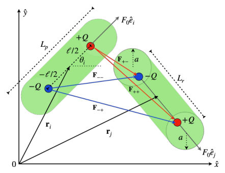
<figcaption class="paper-figure-caption"><b>Fig 1.</b> FIG. 1: Two interacting self-propelled spherocylinders (i, j) carrying magnetic dipole moments modeled as two opposite monopoles ±Q (positive in red, negative in blue) separated by a distance ℓalong the particle director.</figcaption>
</figure>
<figure class="paper-figure-card">
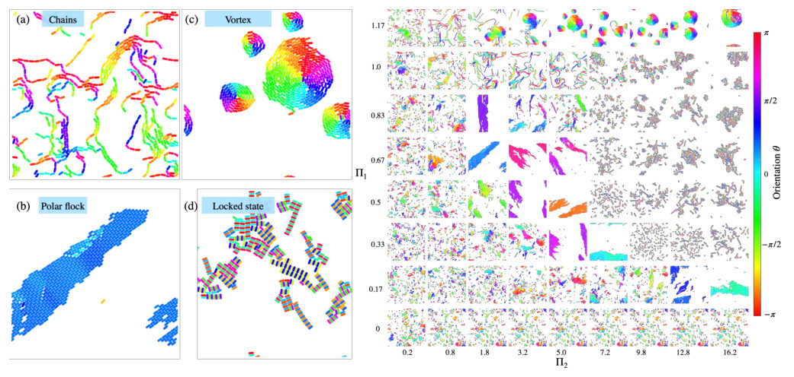
<figcaption class="paper-figure-caption"><b>Fig 2.</b> FIG. 2: Steady-state configurations at Π3 = 150; particles are colored by orientation angle θ ∈(−π, π] using a cyclic HSV colormap (shared colorbar). A nearly uniform hue signals polar alignment, swirling opposing hues within a cluster signal vortex rotation, and random hues indicate disorder. Left: Representative snapshots of the four collective states. Chain (Π2 ≈0.8, Π1 ≈1.17): elongated quasi-linear aggregates driven by head-to-tail attraction, without vortex rotation or global polar alignment. Coherent vortex-alignment (Π2 ≈5.0, Π1 ≈1.17): intra-cluster vortex rotation. Polar flocking (Π2 ≈1.8, Π1 ≈0.67): global director alignment. Locked (Π2 ≈12.8, Π1 ≈0.83): dense compact aggregates...</figcaption>
</figure>
<figure class="paper-figure-card">
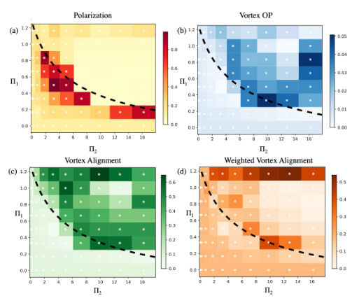
<figcaption class="paper-figure-caption"><b>Fig 3.</b> FIG. 4: Phase diagram in the Π2 × Π1 plane for Π3 = 150. The four panels show the scalar order parameters: (a) polarization P; (b) vortex order parameter ΦV ; (c) vortex alignment ΦA; (d) weighted vortex alignment Φw A. White dots mark the 80 validated state points (Π2 ∈{0, 0.2, . . . , 16.2}, Π1 ∈{0, 0.17, . . . , 1.17}; state points with Π1 ≥1.33 are excluded; see the validity analysis in the Supplemental Material [42]). The black dashed line marks the contour |¯εchain| = 1 (see Fig. 3).</figcaption>
</figure>
<figure class="paper-figure-card">
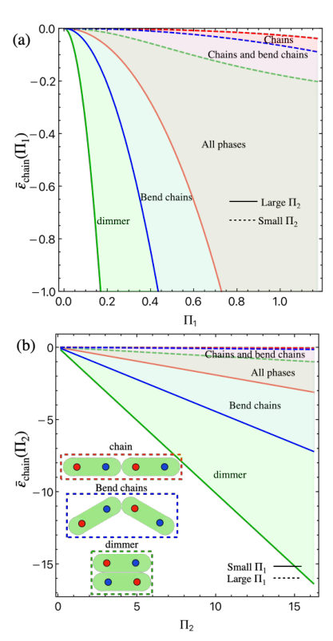
<figcaption class="paper-figure-caption"><b>Fig 4.</b> FIG. 3: Dimensionless two-particle contact energies ¯εchain (red), ¯εbend (blue), and ¯εblocked (green), normalized by F0Lr (Eqs. (7)–(8)), as a function of (a) Π1 and (b) Π2. In each panel, solid and dashed lines correspond to the limiting large and small values of the other parameter, respectively. Shaded regions in (a) indicate where each configuration is energetically accessible: chain only (pink), bent chain only (light blue), and dimer or blocked pair (light green). Insets in (b) illustrate the three contact geometries; red and blue circles denote positive and negative magnetic charges.</figcaption>
</figure>
<figure class="paper-figure-card">
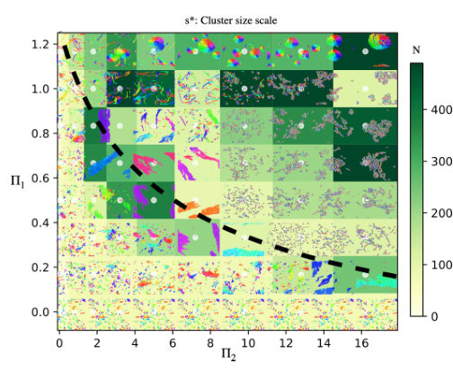
<figcaption class="paper-figure-caption"><b>Fig 5.</b> FIG. 5: Cluster size scale s∗in the Π2 × Π1 plane for Π3 = 150, with simulation snapshots superimposed at each of the 80 state points. s∗is the mean size of the largest cluster normalized by N = 500, ranging from disordered (light, s∗≈0) to fully aggregated (dark, s∗≈N). Labels indicate the observed collective regimes. The black dashed line marks the contour |¯εchain| = 1 (see Fig. 3); large-aggregate states (s∗≫1) lie predominantly above it, with gas and gas-and-cluster phases below.</figcaption>
</figure>
</div>

<p><strong>Summary.</strong> This work investigates how magnetic interactions and particle shape dictate the collective organization of self-propelled microswimmers. By modeling the particles with a dumbbell charge structure, the authors map out five distinct phases—including flocking and vortex alignment—by tuning parameters related to magnetization and geometry.</p>
<p><strong>Why it may be interesting.</strong> While focused on classical active matter, the concept of controlling emergent collective states via tunable interaction potentials (magnetic/steric) is analogous to designing synthetic quantum Hamiltonians or engineered many-body systems in AMO physics.</p>
<details>
<summary>Detailed structure</summary>
<p><strong>Main problem.</strong> The study focuses on characterizing the collective dynamics and phase transitions of self-propelled spherocylinders carrying magnetic dipole moments in two dimensions.</p>
<p><strong>Main result.</strong> The system exhibits a rich landscape of five distinct collective states—gas, polar flock, chain, vortex-alignment, and locked dimer—controlled by particle elongation and distributed magnetic charge.</p>
<p><strong>Method.</strong> The dynamics are modeled using overdamped equations of motion for position and orientation, solved via numerical simulations across parameter space.</p>
<p><strong>Model / system.</strong> The system consists of self-propelled spherocylinders interacting magnetically (modeled as $\pm Q$ monopoles separated by $\ell$) and sterically in 2D. The dynamics are governed by competition between propulsion, repulsion, and magnetic torques.</p>
<p><strong>Key observables.</strong> Collective phases (gas, polar flock, chain, vortex-alignment, locked state), pair contact energies ($ar{\epsilon}_{	ext{chain}}$, $ar{\epsilon}_{	ext{blocked}}$), polarization ($P$), and vortex order parameters ($\Phi_V, \Phi_A$).</p>
<p><strong>Important parameters / regimes.</strong> Three dimensionless groups control behavior: $\Pi_1$ (charge separation ratio), $\Pi_2$ (magnetic vs. propulsion angular velocity comparison), and $\Pi_3$ (steric force vs. self-propulsion).</p>
<p><strong>Assumptions / limitations.</strong> The dumbbell model is used to regularize the magnetic torque, avoiding divergences associated with point-dipole approximations at short range.</p>
<p><strong>Figures summary.</strong> Figures map collective behavior across $(\Pi_1, \Pi_2)$ space, illustrating phase boundaries and showing how order parameters change between the five identified states.</p>
<p><strong>Paper structure.</strong> The paper establishes the governing equations of motion, introduces dimensionless control parameters ($\Pi_1, \Pi_2$), analyzes pair contact energies to define state transitions, and maps out the resulting phase diagram across varying parameter regimes.</p>
</details>
<details>
<summary>Abstract</summary>
<p>We study the collective dynamics of self-propelled spherocylinders carrying magnetic dipole moments in two dimensions. Magnetic interactions are modeled as two opposite monopoles $\pm Q$ separated by a distance $\ell$ along the particle director, a dumbbell model that remains well-defined at short range and introduces an explicit geometric lever arm for the magnetic torque. This approach, combined with the elongated particle geometry, produces a torque that competes with steric alignment in a manner inaccessible to point-dipole or disk models. By independently varying monopole separation and dipole strength (parameters that map directly onto the geometry and magnetization of cylindrical magnets) we show that the system navigates a rich landscape of collective states: gas, polar flock, chain, vortex-alignment, and locked-dimer phases. Our results establish that particle elongation and distributed magnetic charge together provide a minimal, experimentally accessible set of tuning knobs for controlling coherent states in magnetic active matter, with direct implications for the design of self-organized magnetic microswimmers and active colloidal assemblies.</p>
</details>
<p><sub><a href="#top">↑ back to top</a></sub></p>

<p><a id="paper-2606.19900"></a></p>
<h3 id="creating-and-driving-a-twist-soliton-on-a-magnetic-skyrmion-tube"><a href="http://arxiv.org/abs/2606.19900v1">Creating and Driving a Twist Soliton on a Magnetic Skyrmion Tube</a></h3>
<p><strong>Authors:</strong> Shoya Kasai, Kotaro Shimizu, Shun Okumura, Yukitoshi Motome<br>
<strong>Type:</strong> theory · <strong>Category:</strong> strongly correlated electrons · <strong>PDF:</strong> <a href="https://arxiv.org/pdf/2606.19900v1">https://arxiv.org/pdf/2606.19900v1</a><br>
<strong>Analysis basis:</strong> full PDF text, analyzed in chunks
<strong>Topic relevance:</strong> <code>driven-dissipative phase transition</code> <strong>3/5</strong> · <code>exotic spin models in light-matter</code> <strong>3/5</strong> · <code>non-equilibrium dynamics</code> <strong>3/5</strong> · <code>methods for driven-dissipative</code> <strong>2/5</strong> · <code>non-equilibrium universality</code> <strong>2/5</strong> · <code>spintronics-quantum-optics interface</code> <strong>2/5</strong> · <code>Frenkel-Kontorova</code> <strong>1/5</strong> · <code>Keldysh / 2PI / non-Gaussian methods</code> <strong>1/5</strong> · <code>analog quantum simulation</code> <strong>1/5</strong> · <code>correlated / nonlocal dissipation</code> <strong>1/5</strong></p>
<div class="figure-strip-hint">↔ Scroll figures horizontally</div>
<div class="paper-figures-scroll">
<figure class="paper-figure-card">
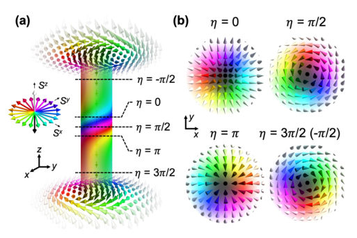
<figcaption class="paper-figure-caption"><b>Fig 1.</b> FIG. 1. (a) Schematic illustration of a locally twisted mag- netic skyrmion tube with twist chirality χ = −1. Cross sec- tions parallel to the xy plane host a magnetic skyrmion with z-dependent helicity η, which varies continuously by 2πχ from bottom to top. The color code shown in the left inset is used throughout this paper to represent spin configurations. (b) Skyrmions at the cross sections represented by the dashed lines in (a) with helicities η = 0, π/2, π, and 3π/2 (−π/2).</figcaption>
</figure>
<figure class="paper-figure-card">
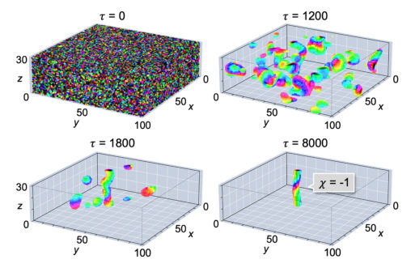
<figcaption class="paper-figure-caption"><b>Fig 2.</b> FIG. 2. Formation process of a twisted skyrmion tube with chirality χ = −1 for (Bz, K) = (0.01, 0.01). Only spins sat- isfying Sz ≲0 are shown. The system size is N = 1012 × 31 under periodic boundary conditions. Each panel presents the time evolution of the spin configuration obtained from a zero-temperature LLG simulation starting from a random spin state.</figcaption>
</figure>
<figure class="paper-figure-card">
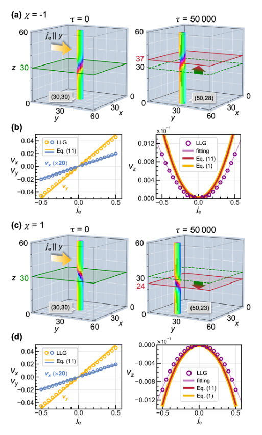
<figcaption class="paper-figure-caption"><b>Fig 3.</b> FIG. 3. In-plane current-induced dynamics of twisted skyrmion tubes and its dependence on je for (a,b) χ = −1 and (c,d) χ = 1. The left and right panels of (a,c) show the initial and final states with (Bz, je) = (0.02, 0.2), respectively. The green and red planes mark the twist positions in the ini- tial and final states, respectively. The left panels of (b,d) show the twisted tube velocity vx and vy as functions of je. The values of vx are multiplied by 20 for visibility. The circles denote simulation results, and the solid lines are predictions from Eq. (11). The right panels of (b,d) show the twist soliton velocity vz. The purple solid lines are quadratic fits ∝j2 e to the numerical...</figcaption>
</figure>
<figure class="paper-figure-card">
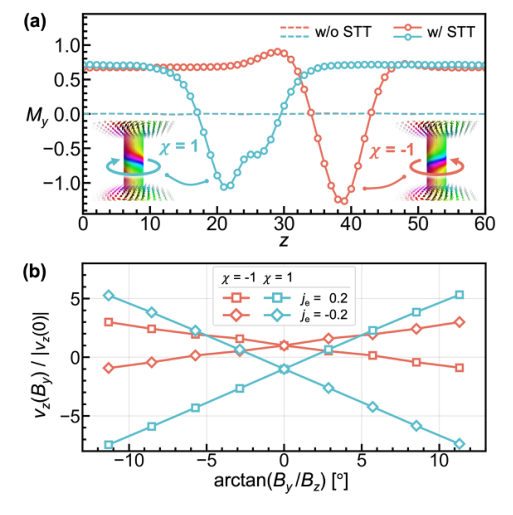
<figcaption class="paper-figure-caption"><b>Fig 4.</b> FIG. 4. (a) Chirality dependence of the STT-induced mag- netization My at each z under je = 0.2. The red and blue data correspond to χ = −1 and χ = 1, respectively. The dashed and solid lines correspond to the cases without and with STT, respectively; the latter is taken at τ = 50 000. (b) Twist soliton velocity normalized by its value at By = 0 as a function of the tilt angle of the external magnetic field. We use Bz = 0.02 in both (a) and (b).</figcaption>
</figure>
<figure class="paper-figure-card">
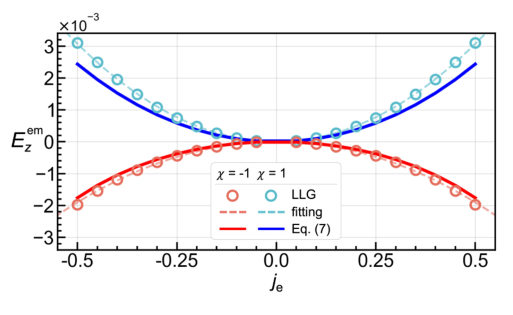
<figcaption class="paper-figure-caption"><b>Fig 5.</b> FIG. 5. χ and je dependence of the nonadiabatic contribu- tion to the EEF with β = 0.02 and Bz = 0.02. The circles represent the values obtained by directly evaluating the sec- ond term in Eq. (6) from snapshots of the LLG dynamics, while the dashed lines show fits ∝j2 e . The solid lines are the Thiele-based predictions obtained from Eq. (7).</figcaption>
</figure>
</div>

<p><strong>Summary.</strong> This work explores the physics of twist solitons on magnetic skyrmion tubes, treating the twist as a crucial degree of freedom beyond simple stacking. By combining numerical simulations with analytical theory, the authors demonstrate that the soliton's motion is nonlinearly driven by current and depends critically on its chirality. This paves the way for designing advanced spintronic devices based on 3D spin textures.</p>
<p><strong>Why it may be interesting.</strong> The study deals with topological defects (solitons) in magnetic materials, which are analogous to excitations studied in quantum field theory or condensed matter systems exhibiting strong correlations. The coupling between topology, current drive, and emergent fields is highly relevant to spintronics.</p>
<details>
<summary>Detailed structure</summary>
<p><strong>Main problem.</strong> The study investigates how introducing a 'twist' along the axis of a magnetic skyrmion tube affects its complex dynamics and emergent physical responses.</p>
<p><strong>Main result.</strong> The twist degree of freedom is shown to be essential, enabling current-driven nonlinear motion where the out-of-plane velocity scales quadratically with the driving current and depends on the soliton's chirality.</p>
<p><strong>Method.</strong> The research combines large-scale numerical simulations solving the LLG equation with analytical calculations using a collective coordinate approach (Thiele equation).</p>
<p><strong>Model / system.</strong> The system is a magnetic skyrmion tube, modeled as a 3D topological soliton in a chiral magnet incorporating exchange interactions, DMI, and Zeeman coupling. Dynamics are driven by spin-transfer torque.</p>
<p><strong>Key observables.</strong> Twist soliton velocity components ($v_x, v_y, v_z$), the associated emergent electric field (EEF), and the sign of the chirality ($\chi$).</p>
<p><strong>Important parameters / regimes.</strong> Current density ($j_e$), magnetic field component perpendicular to the tube, and the twist chirality ($\chi$).</p>
<p><strong>Assumptions / limitations.</strong> The Thiele analysis relies on a rigid-body approximation for steady-state dynamics, which is noted to cause discrepancies with direct LLG simulations.</p>
<p><strong>Figures summary.</strong> Figures illustrate the formation of twisted tubes via quench dynamics, show snapshots of motion under current drive (lateral and out-of-plane), and plot velocity dependence on current density and magnetic field tilt angle.</p>
<p><strong>Paper structure.</strong> The paper progresses from establishing the physical system (skyrmion tubes) to introducing the twist degree of freedom. It then analyzes the dynamics using both numerical simulations (LLG) and analytical models (Thiele equation), culminating in demonstrating control via external fields and detection via emergent electric fields.</p>
</details>
<details>
<summary>Abstract</summary>
<p>A magnetic skyrmion tube is a three-dimensional topological soliton formed by stacking two-dimensional skyrmions along the out-of-plane direction. Recent real-space observations of skyrmion tubes have stimulated growing interest in their dynamics and emergent properties. Here, we go beyond simple skyrmion stacking and investigate how a ``twist" introduced along the tube direction affects the dynamics and emergent responses of skyrmion tubes. We find that such a twist can be created as a localized texture, termed a twist soliton, through thermal quench dynamics. By complementarily combining large-scale numerical simulations with analytical calculations based on collective coordinates, we clarify its current-driven nonlinear motions that depend on its twist chirality. Remarkably, its velocity can be substantially enhanced by a magnetic-field component perpendicular to the tube. Furthermore, the associated emergent electric field enables identification of the twist soliton, including the sign of its chirality, through Hall measurements. Our results reveal the twist degree of freedom as an essential ingredient of skyrmion-tube physics and pave the way for the development of spintronic devices exploiting the three-dimensional nature of spin textures.</p>
</details>
<p><sub><a href="#top">↑ back to top</a></sub></p>

<p><a id="paper-2606.19465"></a></p>
<h3 id="exact-operator-dynamics-in-lindbladian-wess-zumino-witten-conformal-field-theories"><a href="http://arxiv.org/abs/2606.19465v1">Exact operator dynamics in Lindbladian Wess-Zumino-Witten conformal field theories</a></h3>
<p><strong>Authors:</strong> Qicheng Tang, Ruhanshi Barad, Xueda Wen<br>
<strong>Type:</strong> theory · <strong>Category:</strong> statistical mechanics · <strong>PDF:</strong> <a href="https://arxiv.org/pdf/2606.19465v1">https://arxiv.org/pdf/2606.19465v1</a><br>
<strong>Analysis basis:</strong> full PDF text, analyzed in chunks
<strong>Topic relevance:</strong> <code>correlated / nonlocal dissipation</code> <strong>3/5</strong> · <code>driven-dissipative phase transition</code> <strong>3/5</strong> · <code>methods for driven-dissipative</code> <strong>3/5</strong> · <code>non-equilibrium dynamics</code> <strong>3/5</strong> · <code>Keldysh / 2PI / non-Gaussian methods</code> <strong>2/5</strong> · <code>non-equilibrium universality</code> <strong>2/5</strong> · <code>entanglement &amp; information structure</code> <strong>1/5</strong> · <code>scars &amp; prethermalization</code> <strong>1/5</strong></p>
<div class="figure-strip-hint">↔ Scroll figures horizontally</div>
<div class="paper-figures-scroll">
<figure class="paper-figure-card">
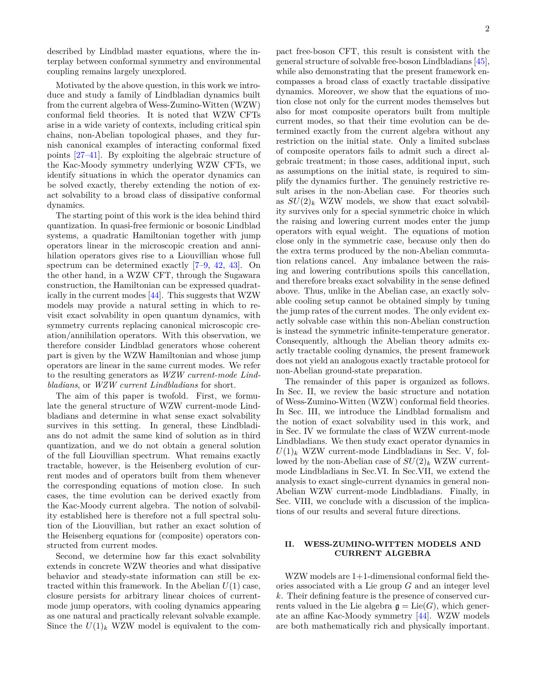
<figcaption class="paper-figure-caption"><b>Fig 1.</b> Low-resolution page preview, page 2</figcaption>
</figure>
<figure class="paper-figure-card">
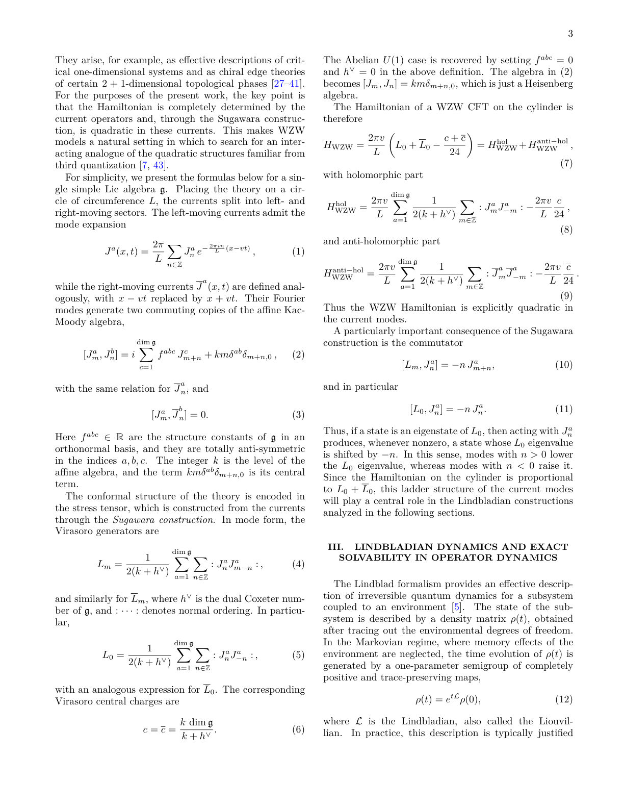
<figcaption class="paper-figure-caption"><b>Fig 2.</b> Low-resolution page preview, page 3</figcaption>
</figure>
<figure class="paper-figure-card">
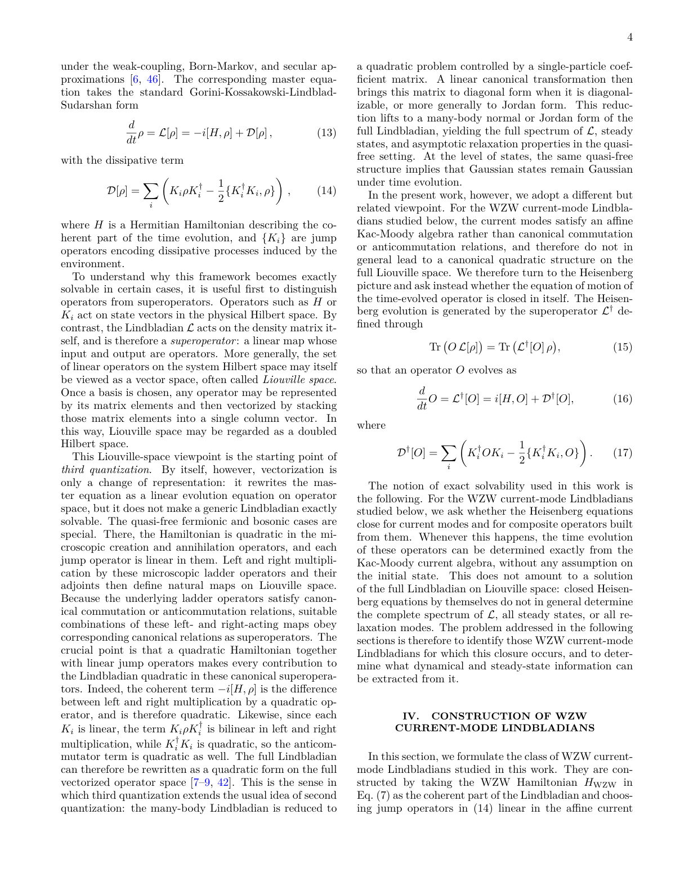
<figcaption class="paper-figure-caption"><b>Fig 3.</b> Low-resolution page preview, page 4</figcaption>
</figure>
<figure class="paper-figure-card">
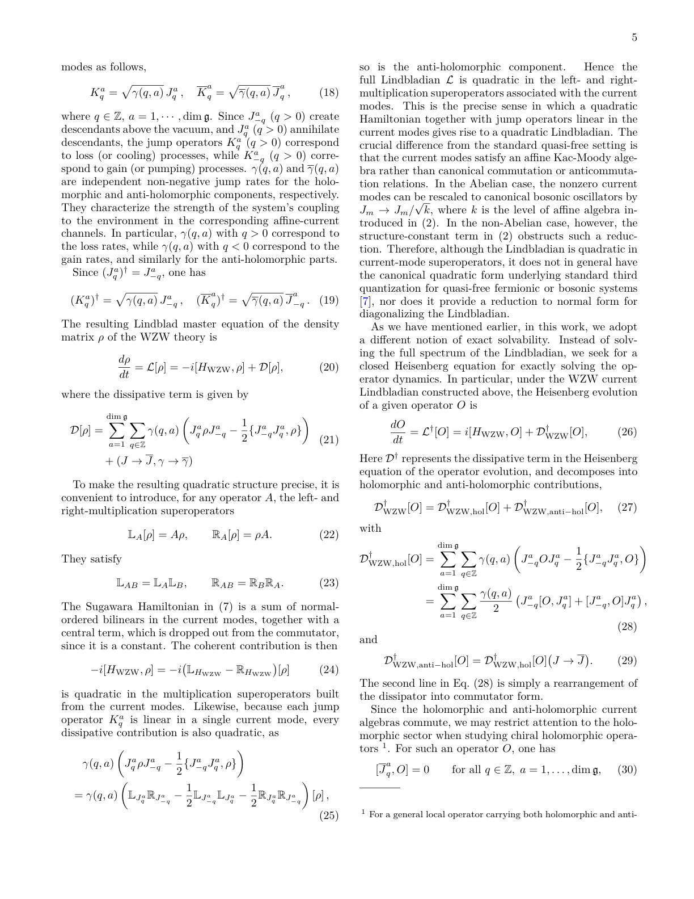
<figcaption class="paper-figure-caption"><b>Fig 4.</b> Low-resolution page preview, page 5</figcaption>
</figure>
<figure class="paper-figure-card">
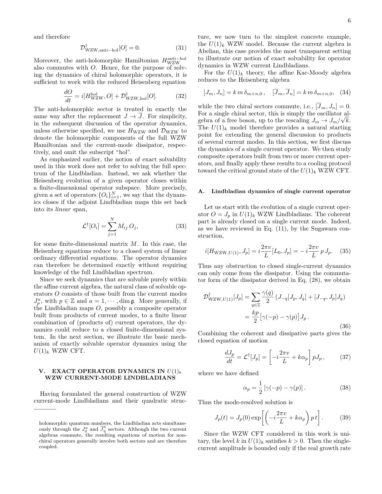
<figcaption class="paper-figure-caption"><b>Fig 5.</b> Low-resolution page preview, page 6</figcaption>
</figure>
</div>

<p><strong>Summary.</strong> The paper investigates the time evolution of observables in WZW CFTs subjected to environmental coupling via a Lindbladian. It finds that while Abelian models allow for broad classes of exactly solvable dissipative dynamics, non-Abelian structures severely restrict solvability, requiring high degrees of symmetry in dissipation rates to maintain algebraic closure.</p>
<p><strong>Why it may be interesting.</strong> This work provides deep insights into how algebraic structures (like current algebras) constrain the dynamics of open quantum systems, offering powerful theoretical tools applicable to understanding dissipation and thermalization in complex field theories.</p>
<details>
<summary>Detailed structure</summary>
<p><strong>Main problem.</strong> The central problem is determining the exact time evolution of physical observables in open quantum many-body systems coupled to environments, specifically within Wess-Zumino-Witten (WZW) conformal field theories.</p>
<p><strong>Main result.</strong> Exact solvability for operator dynamics is highly restricted: it holds generally in the Abelian $U(1)_k$ case but requires specific symmetries (like symmetric dissipation rates) in the non-Abelian setting, leading to a loss of general algebraic closure.</p>
<p><strong>Method.</strong> The authors analyze the Lindbladian master equation by checking for the closure of the Heisenberg equations of motion for current operators and their products, rather than solving the full Liouvillian spectrum.</p>
<p><strong>Model / system.</strong> The system is modeled using WZW CFTs whose dynamics are governed by a Lindblad master equation. The Hamiltonian is derived from the Sugawara construction, involving affine Kac-Moody currents ($J^b_p$).</p>
<p><strong>Key observables.</strong> Operator dynamics (e.g., $\langle J^p J^r 
angle(t)$), closure of Heisenberg equations for current modes, and mixing time ($   au_{mix}$).</p>
<p><strong>Important parameters / regimes.</strong> The level $k$ of the WZW theory, the structure constants of the underlying Lie algebra ($g$), and the specific rates/symmetries of the Lindblad jump operators ($\gamma$).</p>
<p><strong>Assumptions / limitations.</strong> The analysis often focuses on chiral holomorphic sectors or assumes initial states are Gaussian to simplify expectation value calculations. The closure of the Heisenberg equation is a necessary but not sufficient condition for full solvability.</p>
<p><strong>Figures summary.</strong> Not specified in the notes, but the structure implies comparisons between Abelian and non-Abelian dynamics under dissipation.</p>
<p><strong>Paper structure.</strong> The paper systematically analyzes the problem by first establishing the general framework (WZW models and Lindbladians), then contrasting the solvable Abelian case ($U(1)_k$) with the constrained non-Abelian case ($SU(2)_k$), culminating in a discussion of necessary symmetry conditions for exact solvability.</p>
</details>
<details>
<summary>Abstract</summary>
<p>Understanding the time evolution of physical observables in open quantum many-body systems coupled to external environments is a natural and difficult problem, and exact results are still rare. In this work, we study this problem for Wess-Zumino-Witten (WZW) conformal field theories with Lindblad jump operators linear in Kac-Moody current modes. We investigate the exact operator dynamics generated by these Lindbladians, identifying classes of current operators whose Heisenberg equations close and can therefore be solved analytically using the underlying current algebra. In Abelian $U(1)_k$ WZW theories, this closure of operator dynamics holds for arbitrary settings of jump rates and includes exactly tractable cooling dynamics. In contrast, for non-Abelian WZW theories, exact closure occurs only for symmetric current-mode dissipation, where upward and downward current-mode transitions occur with equal rates, and even then it leads to a simple closed evolution only for a single current operator. Generic imbalances, including those needed for cooling, produce additional non-Abelian terms and prevent closure of the opeartor dynamics. Consequently, the current algebra gives rise to a broad family of exactly solvable dissipative dynamics in the Abelian setting, whereas in the non-Abelian case it singles out only a special exactly solvable dynamics corresponding to an infinite-temperature bath.</p>
</details>
<p><sub><a href="#top">↑ back to top</a></sub></p>

<p><a id="paper-2606.19945"></a></p>
<h3 id="purity-and-bound-energy-in-ancilla-assisted-work-extraction"><a href="http://arxiv.org/abs/2606.19945v1">Purity and bound energy in ancilla-assisted work extraction</a></h3>
<p><strong>Authors:</strong> B. Vigneshwar, Farhaan Khan, R. Sankaranarayanan<br>
<strong>Type:</strong> theory · <strong>Category:</strong> statistical mechanics · <strong>PDF:</strong> <a href="https://arxiv.org/pdf/2606.19945v1">https://arxiv.org/pdf/2606.19945v1</a><br>
<strong>Analysis basis:</strong> full PDF text, analyzed in chunks
<strong>Topic relevance:</strong> <code>driven-dissipative phase transition</code> <strong>3/5</strong> · <code>entanglement &amp; information structure</code> <strong>3/5</strong> · <code>methods for driven-dissipative</code> <strong>3/5</strong> · <code>non-equilibrium dynamics</code> <strong>3/5</strong> · <code>correlated / nonlocal dissipation</code> <strong>2/5</strong> · <code>non-equilibrium universality</code> <strong>2/5</strong> · <code>Keldysh / 2PI / non-Gaussian methods</code> <strong>1/5</strong> · <code>quantum measurements</code> <strong>1/5</strong></p>
<div class="figure-strip-hint">↔ Scroll figures horizontally</div>
<div class="paper-figures-scroll">
<figure class="paper-figure-card">
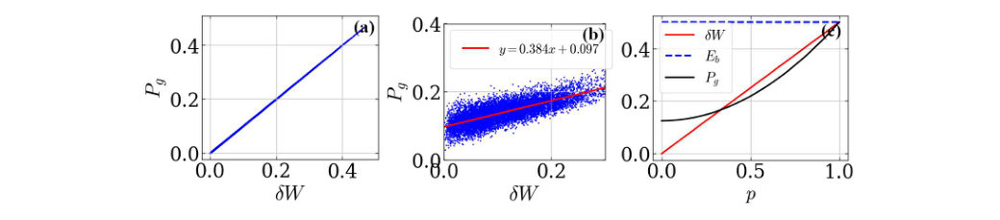
<figcaption class="paper-figure-caption"><b>Fig 1.</b> FIG. 1. Scatter plot of Pg and δW for 104 randomly generated (a) pure states and (b) mixed states. (c) Pg, Eb and δW as a function of parameter p for Werner states.</figcaption>
</figure>
<figure class="paper-figure-card">
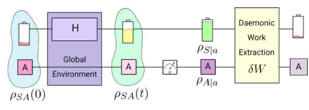
<figcaption class="paper-figure-caption"><b>Fig 2.</b> FIG. 2. Schematic diagram of the protocol. The system and ancilla are initially correlated with the system occupy- ing lower energies followed by charging under global environ- ment. The ancilla is then measured to implement daemonic work extraction.</figcaption>
</figure>
<figure class="paper-figure-card">
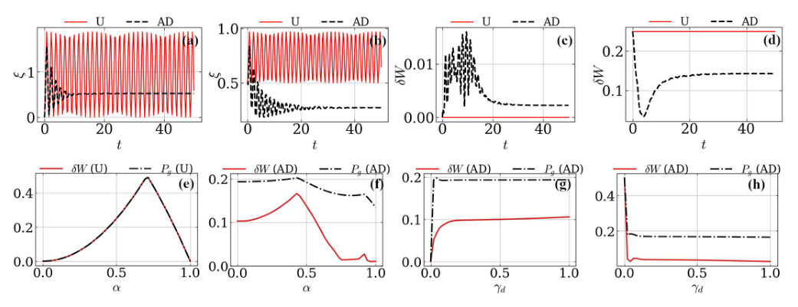
<figcaption class="paper-figure-caption"><b>Fig 3.</b> FIG. 3. Ergotropy of the two-qubit battery under unitary evolution and collective amplitude damping for (a) α = 1 and (b) α = 0.5. The corresponding daemonic gain is shown for (c) α = 1 and (d) α = 0.5. Comparison between the daemonic gain δW and the purity-based gain Pg at t = 100 as a function of the initial-state parameter α for (e) unitary evolution and (f) amplitude damping for γd = 0.3. Gain as a function the dissipation strength γd for (g) α = 0 and (h) α = 1/ √</figcaption>
</figure>
<figure class="paper-figure-card">
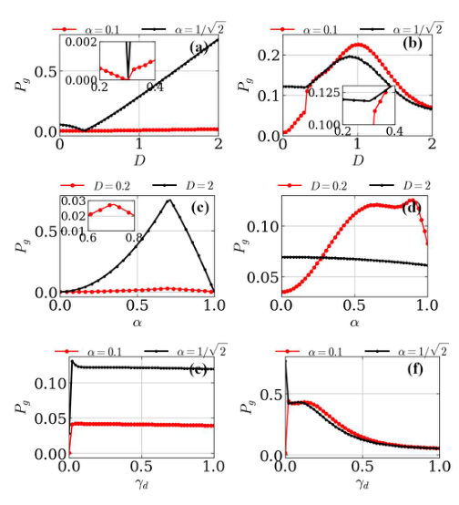
<figcaption class="paper-figure-caption"><b>Fig 4.</b> FIG. 4. Purity-based gain Pg for the interacting XY Z battery model. Pg as a function of DMI strength D under (a) unitary evolution and (b) collective amplitude damping (γd = 0.8), respectively, for α = 0.1 and α = 1/ √</figcaption>
</figure>
</div>

<p><strong>Summary.</strong> This paper develops a theoretical framework to understand the maximum extractable work (daemonic gain) from quantum batteries using ancilla assistance. It establishes that this gain is bounded by the system's bound energy and proposes a computationally simpler metric based on global purity ($P_g$). The research further shows how environmental dissipation and intrinsic interactions critically modulate this thermodynamic advantage.</p>
<p><strong>Why it may be interesting.</strong> This work directly addresses non-equilibrium thermodynamics in quantum systems, providing tools to quantify energy harvesting efficiency beyond simple correlation measures by incorporating information theoretic concepts like purity.</p>
<details>
<summary>Detailed structure</summary>
<p><strong>Main problem.</strong> The study investigates ancilla-assisted work extraction from quantum batteries by characterizing how bound energy and purity govern the achievable daemonic gain.</p>
<p><strong>Main result.</strong> Daemonic gain is governed not only by correlations but also critically by the spectral structure of the Hamiltonian, with a purity-based gain ($P_g$) serving as an effective predictor for this advantage.</p>
<p><strong>Method.</strong> The authors derive theoretical bounds relating daemonic gain ($\delta W$) to bound energy ($E_b$), and introduce $P_g$ to bypass computationally intensive measurement optimization protocols.</p>
<p><strong>Model / system.</strong> The model involves quantum batteries, treated as bipartite system-ancilla states ($
ho_{SA}$), whose dynamics are analyzed under unitary evolution or Lindblad master equations incorporating dissipation.</p>
<p><strong>Key observables.</strong> Daemonic Gain ($\delta W$), Bound Energy ($E_b$), Purity-based Gain ($P_g$), Ergotropy ($\xi$).</p>
<p><strong>Important parameters / regimes.</strong> Dissipation strength ($\gamma_d$), DMI coupling strength ($D$), initial correlation parameters ($\alpha, eta$).</p>
<p><strong>Assumptions / limitations.</strong> The analysis often assumes the validity of $P_g$ as a proxy for $\delta W$, and later sections analyze specific regimes like weak-DMI or strong-DMI interactions.</p>
<p><strong>Figures summary.</strong> Figures illustrate comparisons between $P_g$ and $\delta W$ across pure, mixed, and Werner states; another figure shows the effect of dissipation on gain, and a final set maps $P_g$ dependence on DMI strength ($D$).</p>
<p><strong>Paper structure.</strong> The paper progresses from establishing the upper bound ($\delta W \le E_b$) to introducing the predictive quantity ($P_g$), then analyzing open system dynamics (dissipation), and finally examining how intrinsic interactions modify this gain via spectral restructuring.</p>
</details>
<details>
<summary>Abstract</summary>
<p>We investigate ancilla-assisted work extraction in quantum batteries from the perspective of bound energy and purity. We show that the bound energy of the reduced system provides a tight upper bound to the daemonic gain and that this bound is saturated for globally pure system--ancilla states. Motivated by this relation, we introduce a purity-based gain that qualitatively predicts the daemonic gain without requiring explicit optimization over measurements. We further introduce a protocol to analyze the role of dissipation and intrinsic interactions on daemonic gain. Under a collective environment, dissipation can dynamically generate and stabilize finite daemonic gain through environment-induced correlations. In interacting systems, level crossings and spectral restructuring strongly modify the attainable gain through their influence on the accessible bound energy. Our results demonstrate that daemonic gain is governed not only by correlations, but also by the spectral structure of the underlying Hamiltonian and information loss captured by bound energy and purity.</p>
</details>
<p><sub><a href="#top">↑ back to top</a></sub></p>

<p><a id="paper-2606.20231"></a></p>
<h3 id="thermodynamic-measure-of-intelligence"><a href="http://arxiv.org/abs/2606.20231v1">Thermodynamic Measure of Intelligence</a></h3>
<p><strong>Authors:</strong> Ishanu Chattopadhyay<br>
<strong>Type:</strong> theory · <strong>Category:</strong> statistical mechanics · <strong>PDF:</strong> <a href="https://arxiv.org/pdf/2606.20231v1">https://arxiv.org/pdf/2606.20231v1</a><br>
<strong>Analysis basis:</strong> full PDF text, analyzed in chunks
<strong>Topic relevance:</strong> <code>non-equilibrium universality</code> <strong>3/5</strong> · <code>Keldysh / 2PI / non-Gaussian methods</code> <strong>2/5</strong> · <code>driven-dissipative phase transition</code> <strong>2/5</strong> · <code>entanglement &amp; information structure</code> <strong>2/5</strong> · <code>non-equilibrium dynamics</code> <strong>2/5</strong> · <code>analog quantum simulation</code> <strong>1/5</strong> · <code>correlated / nonlocal dissipation</code> <strong>1/5</strong> · <code>measurement-induced transitions</code> <strong>1/5</strong> · <code>methods for driven-dissipative</code> <strong>1/5</strong> · <code>quantum measurements</code> <strong>1/5</strong> · <code>scars &amp; prethermalization</code> <strong>1/5</strong></p>
<div class="figure-strip-hint">↔ Scroll figures horizontally</div>
<div class="paper-figures-scroll">
<figure class="paper-figure-card">
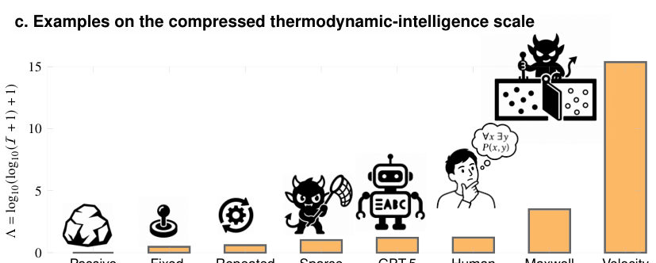
<figcaption class="paper-figure-caption"><b>Fig 1.</b> FIG. 1. Conceptual summary. (a) Recursive self-simulation: a system represents the world at one level together with models of its own future states and actions at higher simulated levels. The rare-valid fidelity (bΦ) measures how accurately the simulation identifies targetable rare-valid futures. (b) Thermodynamic intelligence: relative to a passive trajectory law (P0), an induced law (P) shifts probability mass toward rare-valid trajectories (Vδ), producing rare-valid lift (Iδ = δ−1 R</figcaption>
</figure>
</div>

<p><strong>Summary.</strong> This work proposes a universal thermodynamic measure of intelligence based on how an agent amplifies the probability of rare but physically valid futures. It mathematically links this amplification ('rare-valid lift') directly to the necessity of recursive self-simulation within the agent's internal model. The framework provides quantitative metrics applicable across diverse systems, from classical controllers to advanced AI models.</p>
<p><strong>Why it may be interesting.</strong> While not directly about quantum systems, the use of fluctuation theorems and information geometry provides powerful mathematical tools for analyzing non-equilibrium processes, which are central to open quantum system dynamics and measurement theory.</p>
<details>
<summary>Detailed structure</summary>
<p><strong>Main problem.</strong> To define and measure intelligence as a physical, thermodynamic quantity by quantifying its ability to amplify rare but valid futures.</p>
<p><strong>Main result.</strong> Recursive self-simulation is necessary and nearly sufficient for high thermodynamic intelligence, which is quantified by the 'rare-valid lift' relative to passive dynamics.</p>
<p><strong>Method.</strong> The framework uses non-equilibrium fluctuation theorems and information theory to compare induced path laws ($P$) against a passive baseline law ($P_0$).</p>
<p><strong>Model / system.</strong> The model involves abstract systems ranging from passive matter and feedback controllers to LLMs, analyzed via their ability to generate or select rare trajectories in the space of possible futures.</p>
<p><strong>Key observables.</strong> Rare-valid lift ($\mathcal{I}_\delta$), Path-deviation divergence ($    ext{DKL}$), and the stabilized double-log scale ($\Lambda$).</p>
<p><strong>Important parameters / regimes.</strong> The measure is highly dependent on specified parameters: baseline law, validity criterion, level of description, and trajectory resolution.</p>
<p><strong>Assumptions / limitations.</strong> Assumes applicability of fluctuation theorems; requires explicit definition of baselines and validity sets for measurement to be meaningful.</p>
<p><strong>Figures summary.</strong> Figures conceptually illustrate recursive self-simulation across modeling levels and define the thermodynamic intelligence measure ($\mathcal{I}_\delta$) as a lift relative to passive dynamics.</p>
<p><strong>Paper structure.</strong> The paper builds from defining intelligence via rare-valid amplification, establishing mathematical links between this concept and simulation fidelity (Theorems 1 &amp; 2), deriving bounds using path deviation measures (Theorem 3), and finally applying the framework to symbolic generation and physical engines.</p>
</details>
<details>
<summary>Abstract</summary>
<p>Can intelligence be measured? We propose that intelligence can be defined as the lawful amplification of rare but valid futures: a system increases the probability of outcomes that would be unlikely under passive dynamics but remain admissible under the constraints of the domain. We start with the premise that an intelligent system must model the world and its own place within it. Because the system is part of the world it models, this leads naturally to recursive self-simulation: the system represents futures in which its own actions are part of the trajectory. Our central results give a necessity statement and a conditional near-sufficiency statement connecting this architecture to a precise thermodynamic measure of lawful amplification of rare-valid futures: high rare-valid lift is impossible unless the internal simulation identifies rare-valid futures with high fidelity; conversely, when rare-valid fidelity is high and the simulation contains an effective policy, the achievable lift approaches the actuation-limited optimum. Thus recursive self-simulation is not merely a plausible feature of intelligence but, under the stated assumptions, is necessary and nearly sufficient for high thermodynamic intelligence. The resulting framework makes intelligence measurable on a universal scale, from passive matter and feedback controllers, large language models, and humans as text generators to Maxwell-demon-like information engines.</p>
</details>
<p><sub><a href="#top">↑ back to top</a></sub></p>

<p><a id="paper-2606.20441"></a></p>
<h3 id="computing-noise-canceling-observables-via-pauli-propagation"><a href="http://arxiv.org/abs/2606.20441v1">Computing noise-canceling observables via Pauli propagation</a></h3>
<p><strong>Authors:</strong> Andrew Eddins, Caleb Johnson, Alberto Baiardi, Francesco Tacchino, Ewout van den Berg, Roy Elkabetz, Vinay Tripathi, Swarnadeep Majumder, Max Rossmannek, Liran Shirizly, Abhinav Kandala<br>
<strong>Type:</strong> both · <strong>Category:</strong> quantum information and computing · <strong>PDF:</strong> <a href="https://arxiv.org/pdf/2606.20441v1">https://arxiv.org/pdf/2606.20441v1</a><br>
<strong>Analysis basis:</strong> full PDF text, analyzed in chunks
<strong>Topic relevance:</strong> <code>methods for driven-dissipative</code> <strong>3/5</strong> · <code>quantum measurements</code> <strong>3/5</strong> · <code>QC/QI experiment</code> <strong>2/5</strong> · <code>measurement-induced transitions</code> <strong>2/5</strong> · <code>Keldysh / 2PI / non-Gaussian methods</code> <strong>1/5</strong> · <code>analog quantum simulation</code> <strong>1/5</strong> · <code>correlated / nonlocal dissipation</code> <strong>1/5</strong> · <code>driven-dissipative phase transition</code> <strong>1/5</strong> · <code>non-equilibrium dynamics</code> <strong>1/5</strong></p>
<div class="figure-strip-hint">↔ Scroll figures horizontally</div>
<div class="paper-figures-scroll">
<figure class="paper-figure-card">
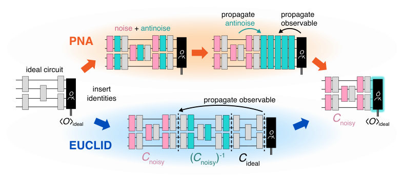
<figcaption class="paper-figure-caption"><b>Fig 1.</b> FIG. 1. Classically propagated noise cancellation schemes. a) Propagated noise absorption (PNA) transforms the ideal circuit into an equivalent pairing of the noisy hardware gate layers combined with a modified, noise-canceling observable. The noisy gate layers are produced by classically propagating equal and opposite antinoise to the end of the circuit. Propagating the observable backwards through this evolved antinoise embeds noise cancellation into the resulting observable ˜O, such that estimating ⟨˜O⟩on the noisy hardware produces the ideal expectation value. b) Euclid constructs ˜O by backpropagating O through a noise deconvolution map consisting of the inverse noisy circuit followed...</figcaption>
</figure>
<figure class="paper-figure-card">
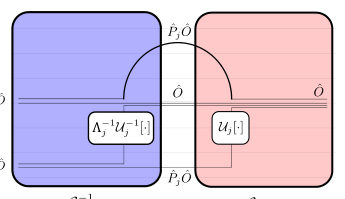
<figcaption class="paper-figure-caption"><b>Fig 2.</b> FIG. 2. Euclid diagrams. The inverse noisy circuit C−1 noisy is represented as a blue box, while the ideal circuit Cideal is represented as a red box. The line diagram indicates the cosine branch is taken for all gates, yielding a backpropagated Pauli equal to the original Pauli observable, O. The bubble diagram indicates the sine branch is taken for the jth gate in both C−1 noisy and Cideal, again yielding Pauli PjPjO = O, but with a different coefficient. In the step diagram, the sine branch is taken either in C−1 noisy or in Cideal. The final operator is PjO, and the operator after the application of Cideal is O (PjO) if the sine branch is taken in C−1 noisy (Cideal).</figcaption>
</figure>
<figure class="paper-figure-card">

<figcaption class="paper-figure-caption"><b>Fig 3.</b> FIG. 3. 9-qubit numerics. a) A 3-by-3 square lattice of qubits is evolved first forwards, then backwards in time under the second-order Trotterization of the transverse-field Ising Hamiltonian. A parameter θ sets the RX (orange) and RZZ (blue) gate angles. CNOT gates are transpiled to H- conjugated CZ primitive gates (not shown). Each two-qubit gate layer is followed by the action of one of four unique Pauli- Lindblad noise models (red). b,c) Expectation values ⟨Z⊗9⟩ versus number of Trotter steps in U (first half of circuit) with θ = 0.05, for (b) PNA and (c) Euclid. All truncation set- tings greatly reduce bias compared to unmitigated results, with the highest settings retaining accuracy...</figcaption>
</figure>
<figure class="paper-figure-card">

<figcaption class="paper-figure-caption"><b>Fig 4.</b> FIG. 4. 20-qubit numerics. Numerically-simulated results for a circuit similar to that in Fig. 3a on a 4-by-5 qubit grid. PNA (max terms=104) or Euclid (K = 6) largely eliminate the bias present in the unmitigated result. The PNA compu- tation, including 106 simulated QPU shots at 2 kHz sampling frequency, was both faster and more accurate than a direct computation of the noiseless circuit via Pauli propagation.</figcaption>
</figure>
<figure class="paper-figure-card">

<figcaption class="paper-figure-caption"><b>Fig 5.</b> FIG. 5. Mitigation of 56-qubit experiments. Raw and mitigated expectation values of a) site-averaged magnetiza- tion PN q Zq/N and b) Z88Z118, measured as a function of gate angle θ (see Sec. III text). Right inset shows qubit connectiv- ity, highlighting the nominal four-step lightcones of the Z88 (blue) and Z118 (purple) measurements. The ideal expecta- tion values of these mirror circuits are all +1 (black horizontal line). Mitigation reduces error at all points. Including more terms when computing ˜O reduces truncation bias. Compari- son with 108-term Pauli-propagation simulations of the noisy circuit (squares) supports attributing residual error in the PNA-mitigated experiments to...</figcaption>
</figure>
</div>

<p><strong>Summary.</strong> The paper introduces a hybrid method combining Pauli propagation with noise-canceling inverse channels to estimate ideal quantum observables from noisy hardware measurements. By constructing a modified observable ($    ilde{O}$), the authors mitigate errors and reduce sampling overhead compared to standard error correction techniques. This framework offers a pathway toward realizing quantum advantage by efficiently extracting accurate physical information from imperfect quantum processors.</p>
<p><strong>Why it may be interesting.</strong> This work provides advanced theoretical tools for error mitigation that directly address the resource scaling issues inherent in simulating complex quantum dynamics, which is highly relevant to understanding noise effects in open quantum systems.</p>
<details>
<summary>Detailed structure</summary>
<p><strong>Main problem.</strong> The primary challenge is mitigating accuracy limitations in quantum simulation arising from hardware noise (error rates/sampling overheads) and the exponential complexity of classical methods like Pauli propagation.</p>
<p><strong>Main result.</strong> A hybrid framework embedding Pauli propagation within a noise-canceling inverse channel successfully estimates ideal observables by measuring a modified observable ($ ilde{O}$) on noisy hardware, outperforming traditional methods.</p>
<p><strong>Method.</strong> The authors propose two specific techniques—Propagated Noise Absorption (PNA) and Euclid—to construct $ ilde{O}$ by classically backpropagating the target observable through noise-canceling inverse channels derived from Pauli evolution rules.</p>
<p><strong>Model / system.</strong> The work is benchmarked on canonical quantum models, specifically using superconducting qubits (up to 56 qubits) whose dynamics are modeled via Trotterized Hamiltonian evolution under a sparse Pauli-Lindblad noise model.</p>
<p><strong>Key observables.</strong> Noise-canceling observables ($ ilde{O}$), the expectation value $\langle 	ilde{O} 
angle$, and diagnostic quantities like truncation bias relative to the ideal noiseless value of $+1$.</p>
<p><strong>Important parameters / regimes.</strong> Error Per Layered Gate (EPLG) target values ($\approx 2 	imes 10^{-3}$); Pauli order ($k$) and Dyson order ($p$); approximation thresholds ($\epsilon$).</p>
<p><strong>Assumptions / limitations.</strong> The core approximations involve truncating the exponentially complex Pauli expansions based on coefficient magnitude or limiting the number of terms/steps, and assuming validity in the weak noise regime for certain derivations.</p>
<p><strong>Figures summary.</strong> Figures illustrate the comparison between PNA, Euclid, and naive lightcone reductions; they show diagrammatic representations (Steps and Bubbles) used in the perturbative expansion of $  ilde{O}$ coefficients.</p>
<p><strong>Paper structure.</strong> The paper develops the theory by first introducing the limitations, then detailing the mathematical framework for constructing $   ilde{O}$ via Pauli propagation rules (diagrammatically), followed by numerical benchmarking on canonical models, and concluding with experimental validation on a superconducting quantum processor.</p>
</details>
<details>
<summary>Abstract</summary>
<p>The pursuit of quantum advantage is driving the co-evolution of quantum processors and classical simulation methods. Despite advances in scale and quality, the accuracy of quantum simulation is ultimately limited by error rates and sampling overheads. Similarly, while classical simulation methods such as Pauli propagation have made remarkable progress, their accuracy is ultimately limited by the exponential growth of operator paths and the truncations needed to control memory and runtime. Here we show that these complementary limitations can be mitigated by embedding Pauli propagation within a hybrid error-mitigation framework that reduces quantum sampling overhead while achieving lower truncation errors with fewer classical resources than traditional Pauli propagation alone. In this framework, a target observable is classically propagated through noise-canceling inverse channels, producing a modified observable that is measured directly on a quantum processor. We prototype two implementations and benchmark their performance numerically on canonical models that challenge traditional Pauli propagation. We also perform experiments on a quantum processor using 56 superconducting qubits, revealing the tradeoffs of their respective truncation strategies. These results illustrate how classical and quantum resources can be orchestrated to extend observable estimation beyond the limits of either approach alone, providing a foundation for quantum-centric supercomputing and future demonstrations of quantum advantage.</p>
</details>
<p><sub><a href="#top">↑ back to top</a></sub></p>

<p><a id="paper-2606.20306"></a></p>
<h3 id="quantum-batteries-as-work-sources-for-phase-locked-parametric-amplification"><a href="http://arxiv.org/abs/2606.20306v1">Quantum Batteries as Work Sources for Phase-Locked Parametric Amplification</a></h3>
<p><strong>Authors:</strong> Borhan Ahmadi<br>
<strong>Type:</strong> theory · <strong>Category:</strong> other · <strong>PDF:</strong> <a href="https://arxiv.org/pdf/2606.20306v1">https://arxiv.org/pdf/2606.20306v1</a><br>
<strong>Analysis basis:</strong> full PDF text, analyzed in chunks
<strong>Topic relevance:</strong> <code>driven-dissipative phase transition</code> <strong>3/5</strong> · <code>interference shaping light</code> <strong>3/5</strong> · <code>methods for driven-dissipative</code> <strong>2/5</strong> · <code>non-equilibrium dynamics</code> <strong>2/5</strong> · <code>Keldysh / 2PI / non-Gaussian methods</code> <strong>1/5</strong> · <code>correlated / nonlocal dissipation</code> <strong>1/5</strong> · <code>correlated cavity matter</code> <strong>1/5</strong> · <code>entanglement &amp; information structure</code> <strong>1/5</strong> · <code>non-equilibrium universality</code> <strong>1/5</strong></p>
<div class="figure-strip-hint">↔ Scroll figures horizontally</div>
<div class="paper-figures-scroll">
<figure class="paper-figure-card">

<figcaption class="paper-figure-caption"><b>Fig 1.</b> FIG. 1: Phase-coherent quantum battery powering a parametric amplifier. (a) A finite bosonic QB (mode c) is prepared with fixed mean energy ¯nc and fixed nominal squeezing rate g√¯nc = λ, while its phase coherence is varied across coherent, displaced-squeezed, partially de- phased, phase-randomized, and number-state-like prepa- rations. The coherent fraction ηin c = |⟨c⟩|2/⟨c†c⟩quanti- fies the battery phase reference. (b) The pump battery drives a nondegenerate three-wave-mixing amplifier. Sig- nal and idler photons emitted through ports κa and κb are collected into temporal modes Af and Bf, which are then interfered to measure the phase-sensitive certifier I(f) min and the collected...</figcaption>
</figure>
<figure class="paper-figure-card">

<figcaption class="paper-figure-caption"><b>Fig 2.</b> FIG. 3: Collected temporal-mode interference fringe at the optimal readout time. The interference observable If(ϕ) is evaluated from the collector modes A and B at τ⋆= 1.37. The coherent pump gives a high-contrast fringe whose minimum is below the vacuum reference I = 1, with I(f) min = 0.553. The phase-randomized co- herent pump has nearly the same collected energy but produces a flat trace above the vacuum reference because MAB = 0. The Fock pump also lacks a phase reference and therefore does not generate a phase-locked amplifier field.</figcaption>
</figure>
<figure class="paper-figure-card">

<figcaption class="paper-figure-caption"><b>Fig 3.</b> FIG. 2: Collector-mode certification of finite-battery parametric amplification. The leaking signal and idler fields are collected into auxiliary temporal modes A and B with matched bandwidth γf/λ = 2. The panels show the collected phase-locking visibility Vf, the interference certifier I(f) min, the normalized collected pair coherence Cf, and the collected pair number nf = (NA + NB)/2. A coherent pump battery produces finite temporal-mode phase locking, Cf &gt; 0, and a sub-vacuum interference dip I(f) min &lt; 1. Phase-randomized coherent and Fock pumps collect comparable energy but have no anomalous temporal-mode coherence and remain above the interfer- ence threshold. The dotted vertical...</figcaption>
</figure>
<figure class="paper-figure-card">

<figcaption class="paper-figure-caption"><b>Fig 4.</b> FIG. 4: Collector-bandwidth dependence of the temporal-mode certifier. The matched collector band- width γf = γA = γB is varied at fixed ¯nc = 5, ξ = 2λ/√κaκb = 0.8, and λTmax = 2. The upper-left panel shows the minimum temporal-mode interference dip ob- tained by optimizing over the readout time. The coher- ent pump remains below the vacuum reference I(f) min = 1, whereas the phase-randomized pump remains above it. The coherent-pump dip improves as the bandwidth is in- creased up to γf/λ ≃2–2.25, and then becomes weaker for broader collectors. The upper-right panel shows the corresponding optimal readout time τ⋆, which decreases with increasing bandwidth. The lower-left panel gives the...</figcaption>
</figure>
</div>

<p><strong>Summary.</strong> This work investigates if quantum batteries can power parametric amplifiers by replacing continuous microwave drives. The authors show that while different pump states can deliver similar amounts of energy, only a truly phase-coherent pump state generates the necessary sub-vacuum interference signature. This establishes phase coherence as the essential resource for efficient, battery-powered quantum amplification.</p>
<p><strong>Why it may be interesting.</strong> It provides a clear quantum resource theory for superconducting circuit components, demonstrating that mere energy storage is insufficient; phase information must be preserved for optimal operation.</p>
<details>
<summary>Detailed structure</summary>
<p><strong>Main problem.</strong> The central question is whether a quantum battery can replace or strongly duty-cycle the continuous microwave pump tone required for phase-locked parametric amplification.</p>
<p><strong>Main result.</strong> Phase coherence, not just stored energy, is the critical resource; only a coherent pump state generates the necessary anomalous two-mode coherence and sub-vacuum interference dip ($I_{\min} < 1$).</p>
<p><strong>Method.</strong> The analysis uses quantum optical diagnostics (interference visibility $I(\phi)$) applied to open-system dynamics modeled by master equations, comparing different initial pump states.</p>
<p><strong>Model / system.</strong> The system is a nondegenerate parametric amplifier driven by a finite bosonic quantum battery acting as the pump. The process is analyzed in both closed and cascaded open-system models.</p>
<p><strong>Key observables.</strong> Phase-sensitive interference minimum ($I_{\min}$), anomalous two-mode coherence ($\langle \hat{a}\hat{b} 
angle$), and collected energy ($n_f$).</p>
<p><strong>Important parameters / regimes.</strong> Pump state type (coherent vs. phase-randomized), squeezing parameter ($r$), and detection bandwidth/time ($ au$ or $\gamma_f$).</p>
<p><strong>Assumptions / limitations.</strong> The analysis often relies on the assumption of a Markovian evolution for leakage, and some parts use approximations like the stiff-pump limit.</p>
<p><strong>Figures summary.</strong> Figures compare $I_{\min}$ across pump types (coherent vs. phase-randomized), showing that only the coherent pump achieves sub-vacuum interference ($I_{\min} < 1$) while depositing similar energy to the randomized pumps.</p>
<p><strong>Paper structure.</strong> The paper progresses from establishing the fundamental resource distinction using simple models, extending this to open systems with leakage, and finally exploring how nonclassical states like squeezing can optimize the required phase coherence.</p>
</details>
<details>
<summary>Abstract</summary>
<p>Quantum batteries have been proposed as locally precharged work sources for superconducting quantum technologies, suggesting a route to reduce continuously supplied microwave drives. Here we ask whether the pump tone of a quantum-limited parametric amplifier can be replaced, or strongly duty-cycled, by a finite bosonic quantum battery. Quantizing the pump of a nondegenerate parametric amplifier exposes a resource distinction hidden in the classical description: stored pump energy can generate signal-idler photons, but pump phase coherence is required to generate a phase-locked amplifier field. In a closed trilinear model, coherent and phase-randomized coherent pumps with the same photon-number distribution produce comparable pair numbers, yet only the coherent pump produces anomalous two-mode coherence and an EPR-squeezed interference dip. Including leakage, we collect the emitted fields into cascaded temporal modes. At matched collector bandwidth, the coherent pump gives \(I_{\min}^{(f)}=0.553\), whereas the phase-randomized pump gives \(I_{\min}^{(f)}=1.94\) at nearly identical collected energy. Weak amplitude squeezing slightly improves the dip by reducing finite-pump number fluctuations while preserving the coherent displacement. Thus battery-powered parametric amplification requires phase-coherent stored energy, possibly assisted by number-noise reduction, rather than stored energy alone.</p>
</details>
<p><sub><a href="#top">↑ back to top</a></sub></p>

<p><a id="paper-2606.20330"></a></p>
<h3 id="observation-of-alignment-tensor-effects-in-metastability-exchange-collisions-with-highly-polarized-3he-ensembles"><a href="http://arxiv.org/abs/2606.20330v1">Observation of alignment tensor effects in metastability-exchange collisions with highly polarized 3He ensembles</a></h3>
<p><strong>Authors:</strong> Yida Sha, Kaiwen Yi, Xingqing Jin, Matteo Fadel, Xiang Peng<br>
<strong>Type:</strong> both · <strong>Category:</strong> other · <strong>PDF:</strong> <a href="https://arxiv.org/pdf/2606.20330v1">https://arxiv.org/pdf/2606.20330v1</a><br>
<strong>Analysis basis:</strong> full PDF text, analyzed in chunks
<strong>Topic relevance:</strong> <code>exotic spin models in light-matter</code> <strong>3/5</strong> · <code>spintronics-quantum-optics interface</code> <strong>3/5</strong> · <code>methods for driven-dissipative</code> <strong>2/5</strong> · <code>non-equilibrium dynamics</code> <strong>2/5</strong> · <code>Keldysh / 2PI / non-Gaussian methods</code> <strong>1/5</strong> · <code>correlated / nonlocal dissipation</code> <strong>1/5</strong> · <code>driven-dissipative phase transition</code> <strong>1/5</strong> · <code>quantum measurements</code> <strong>1/5</strong></p>
<div class="figure-strip-hint">↔ Scroll figures horizontally</div>
<div class="paper-figures-scroll">
<figure class="paper-figure-card">

<figcaption class="paper-figure-caption"><b>Fig 1.</b> Figure 1. 3He atomic energy-level diagram (not to scale). 11S0 and 23S1 represent the ground and metastable states, respectively. The metastable state consists of two hyperfine manifolds with total angular momenta F = 1/2 and F = 3/2, the corresponding Zeeman sublevel populations being denoted by ai. The RF discharge (red arrow) drives roughly 10−6 of the total ground-state atoms into the metastable, whereas ME collisions are represented by the blue double arrow.</figcaption>
</figure>
<figure class="paper-figure-card">

<figcaption class="paper-figure-caption"><b>Fig 2.</b> Figure 2. (a) Dependence of stationary mean values on nuclear polarization P. (b) Time dependence of transverse polarization δF3/2,z obtained from the full model. The inset depicts the initial dynamical evolution over the time interval 0 to 0.004 ms. All vertical axes show values normalized to metastable atom number nt. Simulation parameters in panel (b) are chosen as B0 = 40 µT, τe/Te = 3 × 10−6, T = 300 K, P = 0.6 with the collective nuclear spin tilted by 7◦.</figcaption>
</figure>
<figure class="paper-figure-card">

<figcaption class="paper-figure-caption"><b>Fig 3.</b> Figure 3. (a) Sketch of the experiment apparatus. LP, linear polarizer; HP, half-wave plate; QP, quarter-wave plate; CL, concave lens; PBS, polarizing beam splitter; PD, photoelectric detector; DAQ, data acquisition; OS, optical shutter. (b) Timing diagram for static magnetic field B0, pump laser, RF pulse BRF and probe laser. High (low) level corresponds to the ON (OFF) state.</figcaption>
</figure>
<figure class="paper-figure-card">

<figcaption class="paper-figure-caption"><b>Fig 4.</b> Figure 4. (a) Magnetic field dependence and (b) nuclear polarization dependence of ME-induced relaxation. Simulation parameters 1/Te = 7.01 s−1 and 1/τe = 3.15 × 106 s−1 are used throughout. In panel (b), the magnetic field is fixed at B0 = 15 µT.</figcaption>
</figure>
<figure class="paper-figure-card">

<figcaption class="paper-figure-caption"><b>Fig 5.</b> Figure 5. (a) Magnetic field dependence and (b) nuclear polarization dependence of ME-induced frequency shift. Simulation parameters are the same as those of Fig. 4.</figcaption>
</figure>
</div>

<p><strong>Summary.</strong> This research advances the understanding of nuclear spin dynamics in highly polarized Helium-3 gas by incorporating the metastable alignment tensor into the theoretical description of metastability-exchange collisions. By developing a full model and comparing it to FID measurements, the authors demonstrate that these tensorial effects cause measurable deviations in relaxation rates and frequency shifts at high polarizations. This has direct applications for improving systematic error correction in high-accuracy magnetometry.</p>
<p><strong>Why it may be interesting.</strong> This work is highly relevant as it pushes the boundaries of precision measurement in atomic physics by quantifying systematic errors (tensor effects) that limit magnetometry accuracy in polarized noble gases.</p>
<details>
<summary>Detailed structure</summary>
<p><strong>Main problem.</strong> The study investigates how the metastable alignment tensor, previously ignored, significantly affects the dynamics of highly polarized Helium-3 ensembles during metastability-exchange collisions.</p>
<p><strong>Main result.</strong> The full theoretical model incorporating these tensorial effects accurately predicts polarization-dependent changes in both the relaxation rate and the frequency shift observed experimentally at high polarizations.</p>
<p><strong>Method.</strong> The authors developed a linearized, mean-field model to describe the evolution of collective angular momentum variables, which was then compared against Free-Induction-Decay (FID) measurements.</p>
<p><strong>Model / system.</strong> The physical system is highly polarized Helium-3 gas undergoing Metastability-Exchange Optical Pumping (MEOP). The theoretical framework models the coupled dynamics between ground and metastable Zeeman sublevel populations, including rank-2 tensorial contributions.</p>
<p><strong>Key observables.</strong> ME-induced relaxation rate ($\Gamma_{	ext{ME}}$) and frequency shift ($\delta\omega_{	ext{ME}}$) measured via FID signals.</p>
<p><strong>Important parameters / regimes.</strong> High nuclear polarization ($P > 0.5$), external magnetic field strength ($B_0$), and the comparison between simplified (orientation-only) and full (tensor-inclusive) models.</p>
<p><strong>Assumptions / limitations.</strong> The analysis uses a linearized model under mean-field approximation, and comparisons are made across different polarization regimes where the simple model breaks down.</p>
<p><strong>Figures summary.</strong> Figures show the dependence of relaxation rates and frequency shifts on both external magnetic field strength and nuclear polarization, comparing simplified vs. full model predictions.</p>
<p><strong>Paper structure.</strong> The paper develops a theoretical framework by extending previous models to include alignment tensors, derives linearized evolution equations for tensorial components, and validates these predictions by analyzing experimental FID measurements of relaxation rates and frequency shifts across varying polarizations.</p>
</details>
<details>
<summary>Abstract</summary>
<p>Highly polarized 3He ensembles prepared by metastability-exchange optical pumping (MEOP) have been widely used in precision measurements and fundamental physics. Metastability-exchange (ME) collisions, serving as the basis of MEOP, are traditionally described in terms of atomic orientation, while the significant contributions of metastable alignment tensor at high polarization remain unexplored. In this work, we develop a linearized model under mean-field approximation to investigate alignment tensor effects in highly polarized 3He , which originate from the metastable F = 3/2 manifold and are revealed through ME-induced relaxation and frequency shift. By means of free-induction-decay (FID) measurements, a pronounced dependence on nuclear polarization is experimentally observed in the response of the ground-state-metastable hybrid 3He ensembles to the external magnetic field. Furthermore, after obtaining the characteristics of tensor-induced phenomena, we demonstrate good agreement between the experiment and the theory. This work advances the understanding of nuclear spin dynamics in highly polarized 3He using MEOP. It further provides applications in systematic error correction of high-accuracy magnetometry, as well as in optimal protocol for the generation of nuclear spin-squeezed states.</p>
</details>
<p><sub><a href="#top">↑ back to top</a></sub></p>

<p><a id="paper-2606.20020"></a></p>
<h3 id="effects-of-interaction-range-on-the-mean-field-dynamics-of-bose-polarons"><a href="http://arxiv.org/abs/2606.20020v1">Effects of interaction range on the mean-field dynamics of Bose polarons</a></h3>
<p><strong>Authors:</strong> Piotr Wysocki, Ubaldo Cavazos Olivas, Marek Tylutki, Krzysztof Jachymski<br>
<strong>Type:</strong> theory · <strong>Category:</strong> quantum gases · <strong>PDF:</strong> <a href="https://arxiv.org/pdf/2606.20020v1">https://arxiv.org/pdf/2606.20020v1</a><br>
<strong>Analysis basis:</strong> full PDF text, analyzed in chunks
<strong>Topic relevance:</strong> <code>Kondo &amp; dissipative impurity</code> <strong>3/5</strong> · <code>non-equilibrium dynamics</code> <strong>3/5</strong> · <code>non-equilibrium universality</code> <strong>2/5</strong> · <code>Keldysh / 2PI / non-Gaussian methods</code> <strong>1/5</strong> · <code>analog quantum simulation</code> <strong>1/5</strong> · <code>correlated / nonlocal dissipation</code> <strong>1/5</strong> · <code>driven-dissipative phase transition</code> <strong>1/5</strong> · <code>methods for driven-dissipative</code> <strong>1/5</strong></p>
<div class="figure-strip-hint">↔ Scroll figures horizontally</div>
<div class="paper-figures-scroll">
<figure class="paper-figure-card">

<figcaption class="paper-figure-caption"><b>Fig 1.</b> FIG. 1. Ground state density profile for a BEC interacting with a charged impurity vs a gaussian one for similar impurity-boson scat- tering length.</figcaption>
</figure>
<figure class="paper-figure-card">

<figcaption class="paper-figure-caption"><b>Fig 2.</b> FIG. 2. Scattering length aIB as a function of the interaction strength for the ion-atom and gaussian potentials with b = 1.5 and σ = 0.4, respectively (cf. eq. (2)-(3)).</figcaption>
</figure>
<figure class="paper-figure-card">

<figcaption class="paper-figure-caption"><b>Fig 3.</b> FIG. 3. Polaron residue as a function of the interaction strength C4 or V0 for zero- as well as finite momentum ground states.</figcaption>
</figure>
<figure class="paper-figure-card">

<figcaption class="paper-figure-caption"><b>Fig 4.</b> FIG. 4. Tan contact as a function of the inverse scattering length for a weakly interacting impurity (gray dotted line), ion-atom (solid red line) and Gaussian (green-dashed curve) potentials.</figcaption>
</figure>
<figure class="paper-figure-card">

<figcaption class="paper-figure-caption"><b>Fig 5.</b> FIG. 6. Snapshots of the planar cut through the condensate density at two different times for the ion-atom (upper) and gaussian (lower) potentials for interaction strengths C4 = 0.28, V0 = 1.08</figcaption>
</figure>
</div>

<p><strong>Summary.</strong> This theoretical paper analyzes the dynamics of a Bose polaron—an impurity moving through a Bose gas condensate—by examining the role of interaction range. Using mean-field theory, the authors find that long-range forces lead to significantly different relaxation dynamics and slower equilibration compared to short-range interactions. The findings are crucial for understanding momentum transfer in strongly coupled quantum systems.</p>
<p><strong>Why it may be interesting.</strong> This work provides detailed insights into non-equilibrium transport phenomena in quantum gases, particularly highlighting how the spatial nature of interactions dictates relaxation timescales and effective mass renormalization.</p>
<details>
<summary>Detailed structure</summary>
<p><strong>Main problem.</strong> The study investigates how the interaction range between an impurity particle and a host Bose gas affects the mean-field dynamics of the resulting Bose polaron.</p>
<p><strong>Main result.</strong> Relaxation dynamics exhibit damped oscillations, and the equilibration process is highly sensitive to whether the interaction is long-range (like ion-atom forces) or short-range (local potentials).</p>
<p><strong>Method.</strong> The analysis employs mean-field theory in the impurity's reference frame, utilizing hydrodynamic equations derived from the Gross-Pitaevskii equation.</p>
<p><strong>Model / system.</strong> The system is a 3D Bose polaron model involving an impurity interacting with a degenerate Bose gas. The Hamiltonian includes terms for kinetic energy and various interaction potentials (e.g., power-law or Gaussian).</p>
<p><strong>Key observables.</strong> Impurity velocity oscillations, effective mass ($m^*$), Polaron Residue ($Z$), and Tan contact ($C$).</p>
<p><strong>Important parameters / regimes.</strong> Interaction strength, interaction range (long vs. short), and the coupling regime (strong coupling).</p>
<p><strong>Assumptions / limitations.</strong> The Lee-Low-Pines transformation is used, assuming Galilean invariance, and a mean-field decoupling for bosons is applied.</p>
<p><strong>Figures summary.</strong> Figures compare ground state density profiles, show scattering length dependence on interaction type, plot polaron residue vs. strength, and illustrate impurity momentum decay over time for different potentials.</p>
<p><strong>Paper structure.</strong> The paper develops the dynamics using hydrodynamic equations, linearizes them to study perturbations ($\delta n, \delta S$), derives a Langevin equation for impurity momentum, and compares results obtained from long-range versus short-range interaction models.</p>
</details>
<details>
<summary>Abstract</summary>
<p>We consider the three-dimensional Bose polaron problem in the regime of finite range interactions and competing length scales. Working in the reference frame of the impurity, we study both static and out of equilibrium properties of the system, in particular the transfer of momentum between the impurity and the host gas. We find that relaxation dynamics can occur via damped oscillations of the impurity velocity with simple dependence on the interaction strength. Furthermore, the equilibration process is sensitive to the type of the impurity-bath interaction. Specifically, interatomic forces describing ion-atom systems lead to much longer timescales and more pronounced oscillations in the strong coupling regime with respect to local interaction potentials. We also find that the effective masses can differ by a large amount between the two scenarios, even if the number of atoms in the polaron cloud remains similar for both cases.</p>
</details>
<p><sub><a href="#top">↑ back to top</a></sub></p>

<p><a id="paper-2606.19678"></a></p>
<h3 id="operational-tube-sector-theory-of-quantum-state-distinguishability-under-generalized-symmetries"><a href="http://arxiv.org/abs/2606.19678v1">Operational Tube-Sector Theory of Quantum State Distinguishability Under Generalized Symmetries</a></h3>
<p><strong>Authors:</strong> Song He<br>
<strong>Type:</strong> theory · <strong>Category:</strong> other · <strong>PDF:</strong> <a href="https://arxiv.org/pdf/2606.19678v1">https://arxiv.org/pdf/2606.19678v1</a><br>
<strong>Analysis basis:</strong> full PDF text, analyzed in chunks
<strong>Topic relevance:</strong> <code>entanglement &amp; information structure</code> <strong>3/5</strong> · <code>quantum measurements</code> <strong>3/5</strong> · <code>measurement-induced transitions</code> <strong>2/5</strong> · <code>Keldysh / 2PI / non-Gaussian methods</code> <strong>1/5</strong> · <code>analog quantum simulation</code> <strong>1/5</strong> · <code>correlated / nonlocal dissipation</code> <strong>1/5</strong> · <code>driven-dissipative phase transition</code> <strong>1/5</strong> · <code>methods for driven-dissipative</code> <strong>1/5</strong></p>
<div class="figure-strip-hint">↔ Scroll figures horizontally</div>
<div class="paper-figures-scroll">
<figure class="paper-figure-card">

<figcaption class="paper-figure-caption"><b>Fig 1.</b> Low-resolution page preview, page 2</figcaption>
</figure>
<figure class="paper-figure-card">

<figcaption class="paper-figure-caption"><b>Fig 2.</b> Low-resolution page preview, page 3</figcaption>
</figure>
<figure class="paper-figure-card">

<figcaption class="paper-figure-caption"><b>Fig 3.</b> Low-resolution page preview, page 4</figcaption>
</figure>
<figure class="paper-figure-card">

<figcaption class="paper-figure-caption"><b>Fig 4.</b> Low-resolution page preview, page 5</figcaption>
</figure>
<figure class="paper-figure-card">

<figcaption class="paper-figure-caption"><b>Fig 5.</b> Low-resolution page preview, page 6</figcaption>
</figure>
</div>

<p><strong>Summary.</strong> The paper introduces an advanced 'Operational Tube-Sector Theory' to measure quantum state distinguishability beyond standard methods. It shows that the true physical measurement capability is governed by a boundary tube algebra, which captures conditional information invisible to coarse symmetry measurements. This provides a powerful tool for understanding how entanglement and generalized symmetries constrain what can be experimentally measured.</p>
<p><strong>Why it may be interesting.</strong> This work provides a rigorous mathematical framework for quantifying the operational advantage gained by measuring fine-grained quantum correlations (like those encoded in tube sectors) that are otherwise lost or averaged out when only symmetry-protected observables are measured.</p>
<details>
<summary>Detailed structure</summary>
<p><strong>Main problem.</strong> The paper establishes a refined operational theory for quantum-state distinguishability that surpasses standard fidelity or symmetry-resolved diagnostics, especially in systems with generalized symmetries.</p>
<p><strong>Main result.</strong> The optimal measurement structure is uniquely determined by the center of the boundary tube algebra, $A_{	ext{phys}} = Z(	ext{Tube}C(M_A))$, which quantifies information lost during coarse-graining operations.</p>
<p><strong>Method.</strong> It develops an 'Operational Tube-Sector Theory' using variational principles and resource theory concepts to characterize physically admissible quantum instruments under symmetry constraints.</p>
<p><strong>Model / system.</strong> The framework applies to general many-body systems characterized by generalized symmetries, including noninvertible cases described by fusion categories. Specific benchmarks include the doubled-Ising product Kramers–Wannier model.</p>
<p><strong>Key observables.</strong> Tube-sector probabilities ($p_\alpha$), restricted discrimination functional ($F_P(A)$), and the tube total variation distance ($  ext{D}_{    ext{tube}}  ext{TV}$).</p>
<p><strong>Important parameters / regimes.</strong> Generalized symmetries, entanglement cuts, fusion categories, and boundary module structure.</p>
<p><strong>Assumptions / limitations.</strong> The theory assumes admissibility constraints (complete positivity, locality at the cut) define the physical measurement cone, and that standard diagnostics are coarse-grained limits of the full tube distribution.</p>
<p><strong>Figures summary.</strong> Figures illustrate the hierarchy of measurement algebras, showing how the tube readout provides a strictly higher success probability ($\Delta P > 0$) compared to scalar or symmetry-resolved readouts when conditional information is present but ignored by coarser measurements.</p>
<p><strong>Paper structure.</strong> The paper builds from defining the operational structure via admissible instruments (Chunk 1), deriving the optimal measurement algebra $A_{	ext{phys}}$ (Chunk 2), proving that tube sectors capture non-redundant information invisible to coarse readouts (Chunks 3 &amp; 4), and finally formalizing this as a resource theory of measurement (Chunks 5, 6, &amp; 7).</p>
</details>
<details>
<summary>Abstract</summary>
<p>A variational principle for quantum-state distinguishability is established in many-body systems with generalized symmetries, including noninvertible cases described by fusion categories. Standard fidelity and symmetry-resolved diagnostics emerge as coarse-grained limits of a more refined operational structure. When symmetry actions terminate at entanglement cuts, distinguishability is governed by boundary tube algebras within a symmetry-constrained measurement resource theory. The physically admissible instruments are characterized by complete positivity, entanglement-cut locality, boundary-module covariance, and sequential stability. The resulting optimal measurement structure is uniquely fixed by the center of the boundary tube algebra, $\mathcal{A}_{\mathrm{phys}} = Z\!\left(\mathrm{Tube}_{\mathcal{C}}(\mathcal{M}_A)\right)$, whose primitive idempotents define tube-sector probabilities that refine fidelity-based and symmetry-resolved descriptions. The associated tube positive-operator-valued measures (POVM) are extremal and yield optimal one-shot hypothesis-testing distinguishability under symmetry constraints. The construction is universal across fusion categories and independent of microscopic realization.</p>
</details>
<p><sub><a href="#top">↑ back to top</a></sub></p>

<p><a id="paper-2606.19510"></a></p>
<h3 id="exact-markovian-dissipation-requires-singular-energy-resources"><a href="http://arxiv.org/abs/2606.19510v1">Exact Markovian Dissipation Requires Singular Energy Resources</a></h3>
<p><strong>Authors:</strong> Hiroki Nakabayashi<br>
<strong>Type:</strong> theory · <strong>Category:</strong> other · <strong>PDF:</strong> <a href="https://arxiv.org/pdf/2606.19510v1">https://arxiv.org/pdf/2606.19510v1</a><br>
<strong>Analysis basis:</strong> full PDF text, analyzed in chunks
<strong>Topic relevance:</strong> <code>correlated / nonlocal dissipation</code> <strong>3/5</strong> · <code>methods for driven-dissipative</code> <strong>3/5</strong> · <code>driven-dissipative phase transition</code> <strong>2/5</strong> · <code>non-equilibrium dynamics</code> <strong>2/5</strong> · <code>Keldysh / 2PI / non-Gaussian methods</code> <strong>1/5</strong> · <code>non-equilibrium universality</code> <strong>1/5</strong></p>
<div class="figure-strip-hint">↔ Scroll figures horizontally</div>
<div class="paper-figures-scroll">
<figure class="paper-figure-card">

<figcaption class="paper-figure-caption"><b>Fig 1.</b> Low-resolution page preview, page 2</figcaption>
</figure>
<figure class="paper-figure-card">

<figcaption class="paper-figure-caption"><b>Fig 2.</b> Low-resolution page preview, page 3</figcaption>
</figure>
<figure class="paper-figure-card">

<figcaption class="paper-figure-caption"><b>Fig 3.</b> Low-resolution page preview, page 4</figcaption>
</figure>
<figure class="paper-figure-card">

<figcaption class="paper-figure-caption"><b>Fig 4.</b> Low-resolution page preview, page 5</figcaption>
</figure>
<figure class="paper-figure-card">

<figcaption class="paper-figure-caption"><b>Fig 5.</b> Low-resolution page preview, page 6</figcaption>
</figure>
</div>

<p><strong>Summary.</strong> The paper proves that standard, physically regular Hamiltonian descriptions cannot exactly reproduce the linear short-time decay characteristic of Markovian dissipation described by the GKLS equation. This forces the conclusion that such dissipative processes must be understood as effective approximations rather than exact reduced dynamics.</p>
<p><strong>Why it may be interesting.</strong> This work provides a fundamental constraint linking the mathematical structure of open quantum evolution (GKLS) to the physical constraints imposed by energy conservation and boundedness on the underlying microscopic dynamics.</p>
<details>
<summary>Detailed structure</summary>
<p><strong>Main problem.</strong> The paper investigates whether irreversible quantum dissipation, described by the GKLS equation, can be exactly modeled as the reduced dynamics of a physically regular Hamiltonian dilation.</p>
<p><strong>Main result.</strong> Exact Markovian dissipation requires singular energy resources (e.g., unbounded Hamiltonians), implying that such dissipative processes must be treated as effective descriptions rather than exact reductions from standard physical Hamiltonians.</p>
<p><strong>Method.</strong> The authors compare the short-time decay of the survival probability ($\ell(t)$) predicted by physically regular Hamiltonian evolutions ($o(t)$ or $O(t^2)$) against the linear initial decay ($\Gamma t$) characteristic of non-unitary GKLS semigroups.</p>
<p><strong>Model / system.</strong> The system involves open quantum dynamics governed by the Gorini–Kossakowski–Lindblad–Sudarshan (GKLS) equation. The analysis contrasts this with unitary evolution generated by a total Hamiltonian $H = H_S + H_E + H_{int}$ acting on an environment.</p>
<p><strong>Key observables.</strong> Survival probability loss ($\ell(t)$), and the linear decay coefficient $\Gamma$ derived from the GKLS generator.</p>
<p><strong>Important parameters / regimes.</strong> The regularity conditions, specifically requiring the total Hamiltonian to be bounded below or having finite short-time interaction energy moments.</p>
<p><strong>Assumptions / limitations.</strong> The analysis assumes 'physically regular energy conditions' (e.g., lower bound on $H$ or finite second moment of $H_{int}$).</p>
<p><strong>Figures summary.</strong> Not specified in the notes, but the core comparison is between $\ell(t) \sim t^k$ for $k\ge 2$ (regular case) and $\ell_{	ext{GKLS}}(t) \sim t$ (dissipative case).</p>
<p><strong>Paper structure.</strong> The paper establishes necessary conditions on the short-time behavior of survival loss ($\ell(t)$) under various regularity assumptions derived from Hamiltonian dilation theory, contrasting these bounds with the known linear decay rate of GKLS generators.</p>
</details>
<details>
<summary>Abstract</summary>
<p>The Gorini--Kossakowski--Lindblad--Sudarshan (GKLS) equation describes irreversible quantum dynamical semigroups. We show that this description cannot be exact under physically regular energy conditions. We prove that the open-system survival probability under physically regular energy conditions has sublinear decay, whereas any dissipative GKLS semigroup has a linear short-time decay. Hence exact Markovian dissipation requires singular energy resources: an unbounded-below total Hamiltonian or infinite initial energy, and a divergent interaction-energy moment. Therefore, a dissipative time-independent GKLS equation should be regarded as an effective description rather than the exact reduced dynamics of a Hamiltonian dilation satisfying physically regular energy conditions.</p>
</details>
<p><sub><a href="#top">↑ back to top</a></sub></p>

<p><a id="paper-2606.20187"></a></p>
<h3 id="truncated-wigner-dynamics-of-biclique-quantum-spin-glasses"><a href="http://arxiv.org/abs/2606.20187v1">Truncated Wigner dynamics of biclique quantum spin glasses</a></h3>
<p><strong>Authors:</strong> Dries Sels<br>
<strong>Type:</strong> theory · <strong>Category:</strong> disordered systems and neural networks · <strong>PDF:</strong> <a href="https://arxiv.org/pdf/2606.20187v1">https://arxiv.org/pdf/2606.20187v1</a><br>
<strong>Analysis basis:</strong> full PDF text, analyzed in chunks
<strong>Topic relevance:</strong> <code>Keldysh / 2PI / non-Gaussian methods</code> <strong>3/5</strong> · <code>methods for driven-dissipative</code> <strong>3/5</strong> · <code>non-equilibrium dynamics</code> <strong>2/5</strong> · <code>analog quantum simulation</code> <strong>1/5</strong> · <code>driven-dissipative phase transition</code> <strong>1/5</strong> · <code>exotic spin models in light-matter</code> <strong>1/5</strong> · <code>non-equilibrium universality</code> <strong>1/5</strong></p>
<div class="figure-strip-hint">↔ Scroll figures horizontally</div>
<div class="paper-figures-scroll">
<figure class="paper-figure-card">

<figcaption class="paper-figure-caption"><b>Fig 1.</b> FIG. 1. Quantum annealing schedule, with transverse field g(t/ta) and overall Ising coupling J(t/ta), for an annealing time of ta = 1ns. The schedule is used in D-wave’s quantum annealing experiment [3]. The inset shows a K4,4 biclique graph.</figcaption>
</figure>
<figure class="paper-figure-card">

<figcaption class="paper-figure-caption"><b>Fig 2.</b> FIG. 2. Spin glass order parameter for (from left to right) biclique graphs K4,4, K6,6 and K8,8. The solid lines show the exact result obtained using full state vector simulations with the same Trotterization, while the dots denote the truncated Wigner results. Different colors indicate different annealing times ta going from ta = 4ns (dark green) to ta = 25ns (yellow).</figcaption>
</figure>
<figure class="paper-figure-card">

<figcaption class="paper-figure-caption"><b>Fig 3.</b> FIG. 3. The Pearson correlation coefficient ρ between the TWA and exact ⟨ q2⟩ is extracted from a population of Ns = 100 different biclique graphs. As measure of infidelity, the main figure shows 1−ρ, as a function of annealing time ta, for different system sizes K4,4, K6,6 and K8,8. This inset shows a scatter plot for K8,8, and is simply a different representation of the data in Fig. 2; it can be directly compared to Ref. [3].</figcaption>
</figure>
<figure class="paper-figure-card">

<figcaption class="paper-figure-caption"><b>Fig 4.</b> FIG. 4. The main figure shows the Binder cumulant U ex- tracted as a function of rescaled time, for systems ranging from K8,8 (yellow) to K32,32 (blue) (increasing each subset by 4 qubits) and times ranging from ta = 7ns to ta = 40ns. The inset shows the rescaled order parameter, adding addi- tional K64,64 and K128,128 graphs.</figcaption>
</figure>
</div>

<p><strong>Summary.</strong> This paper analyzes the non-equilibrium dynamics of biclique quantum spin glasses using the Truncated Wigner Approximation (TWA). The authors demonstrate that TWA accurately captures crucial physical signatures, such as sample fluctuations and critical exponents, across large system sizes. This validates TWA as a powerful, scalable tool for studying quantum phase transitions in disordered magnetic systems.</p>
<p><strong>Why it may be interesting.</strong> It provides a computationally inexpensive yet accurate semiclassical tool (TWA) to study complex many-body dynamics in disordered systems, which is relevant for understanding quantum criticality beyond mean-field treatments.</p>
<details>
<summary>Detailed structure</summary>
<p><strong>Main problem.</strong> The study investigates how accurately the Truncated Wigner Approximation (TWA) captures the near adiabatic dynamics of biclique quantum spin glasses, particularly concerning sample-to-sample fluctuations.</p>
<p><strong>Main result.</strong> TWA successfully recovers sample-to-sample fluctuations of the Edwards-Anderson order parameter and extracts critical exponents consistent with theoretical expectations across increasing system sizes.</p>
<p><strong>Method.</strong> The authors use the Truncated Wigner Approximation (TWA), a semiclassical method, to simulate the time evolution of the quantum spin glass Hamiltonian using Trotterization.</p>
<p><strong>Model / system.</strong> The physical system is a biclique quantum spin glass modeled by a time-dependent Ising Hamiltonian: H(t) = J(t/ta)H_0 + g(t/ta)H_x, involving $\sigma^z$ and $\sigma^x$ terms.</p>
<p><strong>Key observables.</strong> Edwards-Anderson order parameter ($\langle q^2 
angle$), Binder cumulant ($U$), and critical exponents ($\mu$, $r$).</p>
<p><strong>Important parameters / regimes.</strong> Annealing time range, system size (up to tens of thousands of qubits), and the fidelity/correlation coefficient ($
ho$) between TWA and exact results.</p>
<p><strong>Assumptions / limitations.</strong> The primary assumption is that the TWA remains accurate in the large-N limit; discrepancies are noted at late times or for small systems with large order parameters.</p>
<p><strong>Figures summary.</strong> Figures compare TWA to exact simulations, showing good agreement ($
ho &gt; 99\%$) and demonstrating data collapse of the Binder cumulant consistent with theoretical predictions across varying system sizes.</p>
<p><strong>Paper structure.</strong> The paper establishes the problem by introducing the model and method (TWA). It then presents results showing that TWA captures key non-equilibrium features, such as sample fluctuations and critical exponents, validating its use for studying quantum phase transitions in spin glasses.</p>
</details>
<details>
<summary>Abstract</summary>
<p>Quantum spin glasses are often considered testbeds for studying quantum optimization algorithms and as such have been the subject of various quantum advantage claims. Here we investigate the near adiabatic dynamics of biclique quantum spin glasses within the (discrete) truncated Wigner approximation (TWA). Benchmarks on small systems show that TWA recovers sample-to-sample fluctuations of the Edwards-Anderson order parameter, over a wide range of annealing times, with increasing fidelity when the system size increases. We extract critical exponents from the Binder cumulant in line with theoretical expectations, reproducing recent quantum experiments. The computational cost of the method is minimal and it can easily be applied to tens of thousands of qubits.</p>
</details>
<p><sub><a href="#top">↑ back to top</a></sub></p>

<p><a id="paper-2606.20440"></a></p>
<h3 id="polaronic-hybridization-of-atoms-dimers-and-trimers-in-a-bose-einstein-condensate"><a href="http://arxiv.org/abs/2606.20440v1">Polaronic hybridization of atoms, dimers and trimers in a Bose-Einstein condensate</a></h3>
<p><strong>Authors:</strong> Carsten Robens, Arthur Christianen, Alexander Y. Chuang, Huan Q. Bui, Yiming Zhang, Richard Schmidt, Martin Zwierlein<br>
<strong>Type:</strong> both · <strong>Category:</strong> other · <strong>PDF:</strong> <a href="https://arxiv.org/pdf/2606.20440v1">https://arxiv.org/pdf/2606.20440v1</a><br>
<strong>Analysis basis:</strong> full PDF text, analyzed in chunks
<strong>Topic relevance:</strong> <code>Kondo &amp; dissipative impurity</code> <strong>3/5</strong> · <code>analog quantum simulation</code> <strong>3/5</strong> · <code>Keldysh / 2PI / non-Gaussian methods</code> <strong>1/5</strong> · <code>Tavis-Cummings &amp; cavity-many-emitter</code> <strong>1/5</strong> · <code>correlated cavity matter</code> <strong>1/5</strong> · <code>driven-dissipative phase transition</code> <strong>1/5</strong> · <code>methods for driven-dissipative</code> <strong>1/5</strong></p>
<div class="figure-strip-hint">↔ Scroll figures horizontally</div>
<div class="paper-figures-scroll">
<figure class="paper-figure-card">

<figcaption class="paper-figure-caption"><b>Fig 1.</b> FIG. 1. Emergence of atom-dimer-trimer superpositions. (a) The rf-association process from the initial-state K-atom im- mersed in a BEC of Na to the dimer-trimer hybridized state. (b) Illustration of the wave function: a superposition of a free K-atom, a dimer, and a trimer. (c) The effective Hamiltonian in the basis of these three states. (d) The three eigenvalues of this Hamiltonian as a function of the BEC density n0. The widths and opacities of the colored sub-lines represent the co- efficients |c1|2 (blue), |c2|2 (green) and |c3|2 (red) for each of the eigenstates. The horizontal dashed lines indicate the en- ergies of the three bare basis states.</figcaption>
</figure>
<figure class="paper-figure-card">

<figcaption class="paper-figure-caption"><b>Fig 2.</b> FIG. 2. Radiofrequency spectra of 40K impurities strongly depend on their position in the 23Na BEC. (a) Density profile of the BEC, where the grayscale indicates the optical density (OD). (b) Spatially resolved spectra at B = 102.5G of initial state |↓⟩depletion when driving at given detuning from the |↓⟩-|↑⟩bare hyperfine transition. The solid lines indicate the theory predictions from the three-level model, whereas the dashed line shows the theory result without three-body cor- relations.</figcaption>
</figure>
<figure class="paper-figure-card">

<figcaption class="paper-figure-caption"><b>Fig 3.</b> FIG. 3. Rf impurity spectra in the center of the BEC as a function of magnetic field near the |↑⟩impurity-boson Fesh- bach resonance. (a) depletion of state |↓⟩and (b) arrival of state |↑⟩. Rf pulse time is chosen at each field for ∼50% de- pletion on the attractive branch, and spectra are normalized for equal transfer at the bare dimer energy. Inset: rf signal at 105.5 G (blue: depletion, green: arrival). In (a) the full width at half maximum of the signal is indicated by the triangles. The theory results from the three-level model are indicated via the solid lines, of which the opacity is set by the overlap of the states with the initial polaron state. The horizontal black markers in (a)...</figcaption>
</figure>
<figure class="paper-figure-card">

<figcaption class="paper-figure-caption"><b>Fig 4.</b> FIG. 4. Lifetimes of the states created by rf injection. These lifetimes are inferred from the ratio of population de- pleted from |↓⟩to population observed in |↑⟩(upper panels and Fig. 3). For data taken at B ≤105 G, we resolve the attractive and repulsive branches of the spectrum, whereas for larger magnetic fields the two features merge (see upper panels). The lifetime of the attractive polaron states (green circles) decreases at deeper binding energy, whereas the life- time of the repulsive polaron branch (red squares) increases. Blue diamonds: lifetime of the merged feature above 105 G. At sufficiently deep binding energies, we do not observe any population in |↓⟩.</figcaption>
</figure>
<figure class="paper-figure-card">

<figcaption class="paper-figure-caption"><b>Fig 5.</b> FIG. 5. The population transfer from impurity spin state |↓⟩ at B = 102.5 G measuring the remaining population in |↓⟩as a function of frequency for several densities of the bosonic bath. Note the double peak structure corresponding to the dimer and trimer feature for the lowest density spectrum, taken with a thermal, uncondensed bosonic cloud. The solid lines corre- spond to the theory results from the three-level model.</figcaption>
</figure>
</div>

<p><strong>Summary.</strong> The research reports on observing three-body correlations in Bose polarons by studying an impurity atom within a BEC. By performing rf spectroscopy and developing a three-level theoretical model, the authors demonstrate that the condensate environment coherently hybridizes molecular bound states (dimer/trimer). This work provides strong evidence for complex many-body interactions in ultracold atomic systems.</p>
<p><strong>Why it may be interesting.</strong> This work provides an excellent example of how complex many-body physics (three-body correlations) can be mapped onto a simple, experimentally verifiable effective Hamiltonian (three-level model), drawing parallels to fundamental concepts in particle physics like CKM mixing.</p>
<details>
<summary>Detailed structure</summary>
<p><strong>Main problem.</strong> The study investigates strong correlations, specifically three-body interactions, within Bose polarons formed by an impurity immersed in a Bose-Einstein condensate (BEC). The goal is to understand how the BEC environment coherently hybridizes different molecular bound states.</p>
<p><strong>Main result.</strong> Clear signatures of three-body correlations are observed spectroscopically, confirming that the ground state eigenstate is a superposition of dimer and trimer components driven by strong BEC coupling. The simple three-level model successfully captures these hybridization effects without requiring free parameters.</p>
<p><strong>Method.</strong> The work combines theoretical modeling using a three-level Hamiltonian with experimental radiofrequency (rf) spectroscopy on trapped atoms. Variational calculations are used to derive the matrix elements for this effective Hamiltonian.</p>
<p><strong>Model / system.</strong> The system involves an impurity atom interacting with a BEC of bosons, leading to polaronic hybridization between bare atomic states, $ ext{NaK}$ dimers, and $ ext{Na}_2   ext{K}$ trimers. The physics is modeled using a three-level Hamiltonian derived from microscopic interactions.</p>
<p><strong>Key observables.</strong> Spectroscopic features (energy shifts and broadening), state composition of the ground state eigenstate, and impurity lifetimes ($ ext{1/}\Gamma$).</p>
<p><strong>Important parameters / regimes.</strong> The system operates in a strong-coupling regime where BEC coupling exceeds intrinsic molecular splittings; key parameters include BEC density and magnetic field tuning near Feshbach resonances.</p>
<p><strong>Assumptions / limitations.</strong> The analysis relies on the assumption that the BEC coupling is strong enough to induce hybridization comparable to or exceeding intrinsic molecular splittings. Theoretical models use approximations like the Born approximation for interboson repulsion.</p>
<p><strong>Figures summary.</strong> Figures show spatially resolved spectra confirming signal dependence on density, energy eigenvalue plots illustrating state superposition vs. density, and lifetime measurements distinguishing between attractive and repulsive polaron branches.</p>
<p><strong>Paper structure.</strong> The paper progresses from establishing the physical problem (three-body correlations in polarons) to developing a simple three-level model Hamiltonian. It details experimental spectroscopy using rf pulses and compares theoretical predictions of hybridization energies and state weights against measured spectral features across varying BEC densities.</p>
</details>
<details>
<summary>Abstract</summary>
<p>The Bose polaron problem of an impurity immersed in a Bose-Einstein condensate (BEC) has been predicted to feature strong correlations arising from bound states of multiple bosons with the impurity. While direct experimental evidence has so far remained elusive, here we observe clear signatures of three-body correlations in Bose polarons. We perform radiofrequency spectroscopy on $^{40}$K impurities in a BEC of $^{23}$Na and identify polaronic hybrid states that can be understood as superpositions of the bare atom, a NaK dimer and a Na$_2$K trimer, coupled through coherent particle exchange with the condensate. We show that the main spectroscopic features are captured by a simple three-level model without free parameters. Our work shows how a condensate environment can coherently hybridize bound states of different composition and mass, reminiscent of quark-flavor mixing described by the Cabibbo-Kobayashi-Maskawa (CKM) matrix in particle physics.</p>
</details>
<p><sub><a href="#top">↑ back to top</a></sub></p>

<p><a id="paper-2606.19431"></a></p>
<h3 id="odd-fluids-from-chiral-cellular-automata"><a href="http://arxiv.org/abs/2606.19431v1">Odd fluids from chiral cellular automata</a></h3>
<p><strong>Authors:</strong> Andrew A. Allocca, Shiva Heidari, Thomas Iadecola, Armin Rahmani, Pouyan Ghaemi, Sriram Ganeshan<br>
<strong>Type:</strong> theory · <strong>Category:</strong> statistical mechanics · <strong>PDF:</strong> <a href="https://arxiv.org/pdf/2606.19431v1">https://arxiv.org/pdf/2606.19431v1</a><br>
<strong>Analysis basis:</strong> full PDF text, analyzed in chunks
<strong>Topic relevance:</strong> <code>non-equilibrium dynamics</code> <strong>3/5</strong> · <code>non-equilibrium universality</code> <strong>2/5</strong> · <code>Keldysh / 2PI / non-Gaussian methods</code> <strong>1/5</strong> · <code>analog quantum simulation</code> <strong>1/5</strong> · <code>correlated / nonlocal dissipation</code> <strong>1/5</strong> · <code>driven-dissipative phase transition</code> <strong>1/5</strong> · <code>methods for driven-dissipative</code> <strong>1/5</strong></p>
<div class="figure-strip-hint">↔ Scroll figures horizontally</div>
<div class="paper-figures-scroll">
<figure class="paper-figure-card">

<figcaption class="paper-figure-caption"><b>Fig 1.</b> FIG. 1. A graphical representation of the rules governing the time evolution of the chiral automaton. Particles are indicated by red arrows pointing from their associated lattice site x along the direction of their velocity ℓ. (a) The streaming step, moving a particle to the next lattice site in the direction of its velocity. (b) Three-body collisions between configurations C3,i. (c) Chiral two-body collisions between configurations C2,i; the probability for clockwise and counter-clockwise scattering are allowed to differ. (d) The magnetic effect demonstrated for a single particle, shifting the link index by b after streaming and rotating the velocity. All configurations are rotated in this...</figcaption>
</figure>
<figure class="paper-figure-card">

<figcaption class="paper-figure-caption"><b>Fig 2.</b> FIG. 2. Automaton simulation of chiral hydrodynamic transport. (a) Schematic of the Poiseuille geometry used in the simulations. The system is periodic along the longitudinal x direction, with neutral wall layers of thickness w imposed near the upper and lower boundaries. A weak stochastic drive pkick injects longitudinal momentum in the bulk, while viscosity extraction is performed in the central fitting window after excluding boundary-adjacent regions of thickness dbulk. (b) Time-averaged flow at p = 0.7, with color indicating 100ux and arrows showing the coarse-grained velocity field. (c) Velocity profiles ux(y) and uy(y); the solid curve shows the quadratic bulk fit to ux(y). (d,e)...</figcaption>
</figure>
</div>

<p><strong>Summary.</strong> This work develops a chiral generalization of the FHP lattice gas automaton to model fluids exhibiting odd viscosity. By introducing asymmetric scattering rules, the authors show that microscopic parity violation leads directly to macroscopic Hall viscosity ($\eta_H$). The methodology successfully bridges discrete particle dynamics with continuum hydrodynamics via rigorous theoretical expansion and simulation.</p>
<p><strong>Why it may be interesting.</strong> While focused on classical fluid dynamics, the methodology—deriving macroscopic symmetries (or lack thereof) from explicit micro-rules involving broken parity—is highly relevant to understanding symmetry breaking in quantum many-body systems or non-equilibrium quantum field theories.</p>
<details>
<summary>Detailed structure</summary>
<p><strong>Main problem.</strong> The study aims to understand how microscopic chiral properties, encoded in local particle interactions within a lattice gas automaton, manifest as macroscopic odd-fluid behavior.</p>
<p><strong>Main result.</strong> The authors successfully constructed a parity-breaking cellular automaton that yields continuum hydrodynamic equations exhibiting non-zero Hall viscosity ($\eta_H$), linking discrete chirality rules to measurable transport coefficients.</p>
<p><strong>Method.</strong> The derivation involves constructing a chiral generalization of the FHP lattice gas model and employing a Chapman-Enskog expansion on the associated Boltzmann equation to extract macroscopic transport coefficients.</p>
<p><strong>Model / system.</strong> The system is a 2D triangular lattice modeled by a cellular automaton, which undergoes discrete time evolution via collision (including asymmetric two-body chiral scattering) and streaming steps, with an optional rotation mimicking a magnetic field.</p>
<p><strong>Key observables.</strong> Odd viscosity ($\eta_H$), shear viscosity ($\eta$), and the full stress tensor components ($\sigma_{ij}$), measured through Poiseuille flow simulations.</p>
<p><strong>Important parameters / regimes.</strong> Chirality parameter ($p$) governing collision asymmetry, external magnetic field strength ($B$), and the small expansion parameter ($\epsilon$).</p>
<p><strong>Assumptions / limitations.</strong> The derivation relies on a Chapman-Enskog expansion in multiple scales ($\epsilon$) and assumes that the system can be coarse-grained into continuum hydrodynamics.</p>
<p><strong>Figures summary.</strong> Figures illustrate the time evolution rules (streaming, 3-body, chiral 2-body collisions) and compare simulated vs. analytically predicted values for shear and Hall viscosities as a function of the chirality parameter $p$.</p>
<p><strong>Paper structure.</strong> The paper progresses from defining the microscopic chiral automaton dynamics to deriving the continuum hydrodynamic equations via Chapman-Enskog expansion, culminating in analytical predictions and numerical verification of both standard and odd transport coefficients.</p>
</details>
<details>
<summary>Abstract</summary>
<p>Cellular automata are discrete dynamical systems defined on a lattice, in which each site carries a finite set of states that evolve in time according to local deterministic rules. An important application of cellular automata is in lattice gas models of fluids, where the cellular automaton framework provides a particle-based microscopic description of hydrodynamic behavior. The macroscopic fluid equations emerge after coarse-graining over many lattice sites and time steps, offering a bottom-up route to hydrodynamics. A celebrated example is the Frisch-Hasslacher-Pomeau (FHP) model, an automaton defined on a two-dimensional triangular lattice that yields the two-dimensional Navier-Stokes equations upon coarse-graining. In this work, we construct a parity-breaking generalization of the FHP model through two modifications: introducing chiral two-body collision rules and systematically rotating particle velocities to mimic the effect of a background magnetic field. We show that this automaton yields a hydrodynamic model with odd viscosity, a transverse transport coefficient that is a hallmark of odd fluids. We verify the analytical transport coefficients using Poiseuille-flow simulations of the chiral FHP automaton. Our results demonstrate that the chiral automaton introduced here provides a bridge between microscopic parity-breaking scattering processes and macroscopic odd-fluid hydrodynamics.</p>
</details>
<p><sub><a href="#top">↑ back to top</a></sub></p>
<hr>
<p>
<a href="index.html">← Index</a>
 · <a href="papers_02.html">← Previous</a> · <a href="papers_04.html">Next →</a>
</p>
<hr>

</body>
</html>
